This package was initiated to integrate some C/Fortran/SAS programs I have written or used over the years. As such, it would rather be a long-term project, but an immediate benefit is something complementary to other packages currently available from CRAN, e.g. genetics, hwde, etc. I hope eventually this will be part of a bigger effort to fulfil most of the requirements foreseen by many1, within the portable environment of R for data management, analysis, graphics and object-oriented programming. My view has been outlined more formally2,3 in relation to other package systems and also on package kinship4,5. I feel the enormous advantage by shifting to R and would like to my work with others as it is available, which I will not claim this work as exclusively done by myself, but would like to invite others to join me and enlarge the collections and improve them.
With recent work on genomewide association studies (GWASs) especially protein GWASs, I
have added many functions such as METAL_forestplot which handles data from software
METAL6 and qtlFinder which extracts sentinels from GWAS summary statistics
in a way that is very appealing to us compared to some other established software.
Meanwhile, the size of the package surpasses the limit as imposed by CRAN, thus the
old good feature of S as with R that value both code and data alike has to suffer
slightly in that gap.datasets and gap.examples are spun off as two separate
packages; they do deserve a glimpse however for some general ideas. A separate
initiative has been made in the pQTLtools package.
Notable recent technical updates include:
runshinygap()).ACDE(), ccsize() and mhtplot().These experiences can be useful for others in their package development. I found it
useful to use specific functions without loading the whole package, i.e., library(gap),
e.g.,invnormal <- gap::invnormal, log10p <- gap::log10p.
The currently available functions are shown below,
| Name | Description |
|---|---|
| ANALYSIS | |
| ACDE | AE/ACE/ADE models using nuclear families |
| AE3 | AE model using nuclear family trios |
| bt | Bradley-Terry model for contingency table |
| ccsize | Power and sample size for case-cohort design |
| cs | Credibel set |
| fbsize | Sample size for family-based linkage and association design |
| gc.em | Gene counting for haplotype analysis |
| gcontrol | genomic control |
| gcontrol2 | genomic control based on p values |
| gcp | Permutation tests using GENECOUNTING |
| gc.lambda | Estionmation of the genomic control inflation statistic (lambda) |
| genecounting | Gene counting for haplotype analysis |
| gif | Kinship coefficient and genetic index of familiality |
| MCMCgrm | Mixed modeling with genetic relationship matrices |
| hap | Haplotype reconstruction |
| hap.em | Gene counting for haplotype analysis |
| hap.score | Score statistics for association of traits with haplotypes |
| htr | Haplotype trend regression |
| hwe | Hardy-Weinberg equilibrium test for a multiallelic marker |
| hwe.cc | A likelihood ratio test of population Hardy-Weinberg equilibrium |
| hwe.hardy | Hardy-Weinberg equilibrium test using MCMC |
| invnormal | Inverse normal transformation |
| kin.morgan | kinship matrix for simple pedigree |
| LD22 | LD statistics for two diallelic markers |
| LDkl | LD statistics for two multiallelic markers |
| lambda1000 | A standardized estimate of the genomic inflation scaling to |
| a study of 1,000 cases and 1,000 controls | |
| log10p | log10(p) for a standard normal deviate |
| log10pvalue | log10(p) for a P value including its scientific format |
| logp | log(p) for a normal deviate |
| masize | Sample size calculation for mediation analysis |
| mia | multiple imputation analysis for hap |
| mr | Mendelian randomization analysis |
| mtdt | Transmission/disequilibrium test of a multiallelic marker |
| mtdt2 | Transmission/disequilibrium test of a multiallelic marker |
| by Bradley-Terry model | |
| mvmeta | Multivariate meta-analysis based on generalized least squares |
| pbsize | Power for population-based association design |
| pbsize2 | Power for case-control association design |
| pfc | Probability of familial clustering of disease |
| pfc.sim | Probability of familial clustering of disease |
| pgc | Preparing weight for GENECOUNTING |
| print.hap.score | Print a hap.score object |
| s2k | Statistics for 2 by K table |
| sentinels | Sentinel identification from GWAS summary statistics |
| tscc | Power calculation for two-stage case-control design |
| GRAPHICS | |
| asplot | Regional association plot |
| ESplot | Effect-size plot |
| circos.cnvplot | circos plot of CNVs |
| circos.cis.vs.trans.plot | circos plot of cis/trans classification |
| circos.mhtplot | circos Manhattan plot with gene annotation |
| circos.mhtplot2 | Another circos Manhattan plot |
| cnvplot | genomewide plot of CNVs |
| labelManhattan | Annotate Manhattan or Miami Plot |
| METAL_forestplot | forest plot as R/meta’s forest for METAL outputs |
| makeRLEplot | make relative log expression plot |
| mhtplot | Manhattan plot |
| mhtplot2 | Manhattan plot with annotations |
| mhtplot.trunc | truncated Manhattan plot |
| miamiplot | Miami plot |
| miamiplot2 | Miami plot |
| mr_forestplot | Mendelian Randomization forest plot |
| pedtodot | Converting pedigree(s) to dot file(s) |
| pedtodot_verbatim | Pedigree-drawing with graphviz |
| plot.hap.score | Plot haplotype frequencies versus haplotype score statistics |
| qqfun | Quantile-comparison plots |
| qqunif | Q-Q plot for uniformly distributed random variable |
| qtl2dplot | 2D QTL plot |
| qtl2dplotly | 2D QTL plotly |
| qtl3dplotly | 3D QTL plotly |
| UTILITIES | |
| SNP | Functions for single nucleotide polymorphisms (SNPs) |
| BFDP | Bayesian false-discovery probability |
| FPRP | False-positive report probability |
| ab | Test/Power calculation for mediating effect |
| b2r | Obtain correlation coefficients and their variance-covariances |
| chow.test | Chow’s test for heterogeneity in two regressions |
| chr_pos_a1_a2 | Form SNPID from chromosome, posistion and alleles |
| cis.vs.trans.classification | a cis/trans classifier |
| ci2ms | Effect size and standard error from confidence interval |
| comp.score | score statistics for testing genetic linkage of quantitative trait |
| GRM functions | ReadGRM, ReadGRMBin, ReadGRMPLINK, |
| ReadGRMPCA, WriteGRM, | |
| WriteGRMBin, WriteGRMSAS | |
| handle genomic relationship matrix involving other software | |
| get_b_se | Get b and se from AF, n, and z |
| get_pve_se | Get pve and its standard error from n, z |
| get_sdy | Get sd(y) from AF, n, b, se |
| h2G | A utility function for heritability |
| h2GE | A utility function for heritability involving gene-environment interaction |
| h2l | A utility function for converting observed heritability to its counterpart |
| under liability threshold model | |
| h2_mzdz | Heritability estimation according to twin correlations |
| klem | Haplotype frequency estimation based on a genotype table |
| of two multiallelic markers | |
| makeped | A function to prepare pedigrees in post-MAKEPED format |
| metap | Meta-analysis of p values |
| metareg | Fixed and random effects model for meta-analysis |
| muvar | Means and variances under 1- and 2- locus (diallelic) QTL model |
| pvalue | P value for a normal deviate |
| qtlClassifier | A QTL cis/trans classifier |
| qtlFinder | Distance-based signal identification |
| read.ms.output | A utility function to read ms output |
| revStrand | Allele on the reverse strand |
| runshinygap | Start shinygap |
| snptest_sample | A utility to generate SNPTEST sample file |
| whscore | Whittemore-Halpern scores for allele-sharing |
| weighted.median | Weighted median with interpolation |
After installation, you will be able to obtain the list by typing library(help=gap)
in alphabetical order, or ?gap::gap ordered by category, or view it within a web
browser via help.start(). A full list of functions is provided in the Appendix.
This file can be viewed with command vignette("gap", package="gap"). You can cut
and paste examples at end of each function’s documentation.
Both genecounting and hap are able to handle SNPs and multiallelic
markers, with the former be flexible enough to include features such as X-linked data
and the later being able to handle large number of SNPs. But they are unable to
recode allele labels automatically, so functions gc.em and hap.em are in
haplo.em format and used by a modified function hap.score in association testing.
It is notable that multilocus data are handled differently from that in hwde and elegant definitions of basic genetic data can be found in the genetics package. Incidentally, I found my C mixed-radixed sorting routine7 is much faster than R’s internal function.
With exceptions such as function pfc which is very computer-intensive, most functions
in the package can easily be adapted for analysis of large datasets involving either
SNPs or multiallelic markers. Some are utility functions, e.g. muvar and whscore,
which will be part of the other analysis routines in the future.
The benefit with R compared to standalone programs is that for users, all functions have unified format. For developers, it is able to incorporate their C/C++ programs more easily and avoid repetitive work such as preparing own routines for matrix algebra and linear models. Further advantage can be taken from packages in Bioconductor, which are designed and written to deal with large number of genes.
To facilitate comparisons and individual preferences, the source codes for EHPLUS8,
2LD, GENECOUNTING, HAP9, now hosted at GitHub, have enjoyed great popularity ahead
of GWASs therefore are likely to be more familiar than their R counterparts in gap but
you need to follow their instructions to compile for a particular computer system.
I have kept the original pedtodot.sh by David Duffy which enables contrast with
pedtodot_verbatim() and pedtodot() reported as application notes. I have also included
ms code10 to couple with read.ms.output.
A final note is concerned about twinan90, which is now dropped from the package function
list due to difficulty to keep up with the requirements by the R environment nevertheless
you will still be able to compile and use otherwise from gap.examples.
This has been a template for adding self-contained examples:
library(gap)
demo(gap)See examples of haplotype analysis there.
I have included the original file for the R News as well as put examples in separate
vignettes. They can be accessed via vignette("rnews",package="gap.examples") and
vignette("pedtodot", package="gap.examples"), respectively.
We also demonstrate through pedigree 10081 example5 with pedtodot_verbatim.
library(gap)
#> Loading required package: gap.datasets
#> gap version 1.15.3
knitr::kable(p3,caption="An example pedigree")| pid | id | fid | mid | sex | aff | GABRB1 | D4S1645 |
|---|---|---|---|---|---|---|---|
| 10081 | 1 | 2 | 3 | 2 | 2 | 7/7 | 7/10 |
| 10081 | 2 | 0 | 0 | 1 | 1 | -/- | -/- |
| 10081 | 3 | 0 | 0 | 2 | 2 | 7/9 | 3/10 |
| 10081 | 4 | 2 | 3 | 2 | 2 | 7/9 | 3/7 |
| 10081 | 5 | 2 | 3 | 2 | 1 | 7/7 | 7/10 |
| 10081 | 6 | 2 | 3 | 1 | 1 | 7/7 | 7/10 |
| 10081 | 7 | 2 | 3 | 2 | 1 | 7/7 | 7/10 |
| 10081 | 8 | 0 | 0 | 1 | 1 | -/- | -/- |
| 10081 | 9 | 8 | 4 | 1 | 1 | 7/9 | 3/10 |
| 10081 | 10 | 0 | 0 | 2 | 1 | -/- | -/- |
| 10081 | 11 | 2 | 10 | 2 | 1 | 7/7 | 7/7 |
| 10081 | 12 | 2 | 10 | 2 | 2 | 6/7 | 7/7 |
| 10081 | 13 | 0 | 0 | 1 | 1 | -/- | -/- |
| 10081 | 14 | 13 | 11 | 1 | 1 | 7/8 | 7/8 |
| 10081 | 15 | 0 | 0 | 1 | 1 | -/- | -/- |
| 10081 | 16 | 15 | 12 | 2 | 1 | 6/6 | 7/7 |
library(DiagrammeR)
gap::pedtodot_verbatim(p3)
#> Pedigree 10081
DiagrammeR::grViz(readr::read_file("10081.dot"))Figure 5.1: An example pedigree
Next, I will provide an example for kinship calculation using kin.morgan.
It is recommended that individuals in a pedigree are ordered so that parents
always precede their children. In this regard, package pedigree can be
used, and package kinship2 can be used to produce pedigree diagram as with
kinship matrix.
The pedigree diagram is as follows,
data(lukas, package="gap.datasets")
library(kinship2)
#> Loading required package: Matrix
#> Loading required package: quadprog
#> Warning: kinship2 package is deprecated for R <= 4.5; switch functionality to
#> Pedixplorer from BioConductor
ped <- with(lukas,pedigree(id,father,mother,sex))
plot(ped,cex=0.4)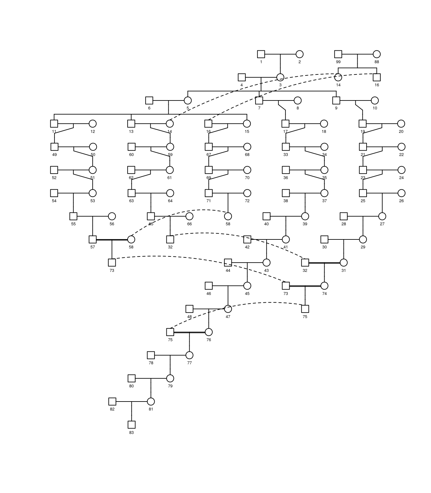
Figure 5.2: A pedigree diagram
We then turn to the kinship calculation.
# unordered individuals
gk1 <- kin.morgan(as.matrix(lukas[1:3]))
write.table(gk1$kin.matrix,"gap_1.txt",quote=FALSE)
library(kinship2)
kk1 <- kinship(lukas[,1],lukas[,2],lukas[,3])
write.table(kk1,"kinship_1.txt",quote=FALSE)
d <- gk1$kin.matrix-kk1
sum(abs(d))
# order individuals so that parents precede their children
library(pedigree)
op <- orderPed(lukas)
olukas <- lukas[order(op),]
gk2 <- kin.morgan(as.matrix(olukas[1:3]))
write.table(olukas,"olukas.csv",quote=FALSE)
write.table(gk2$kin.matrix,"gap_2.txt",quote=FALSE)
kk2 <- kinship(olukas[,1],olukas[,2],olukas[,3])
write.table(kk2,"kinship_2.txt",quote=FALSE)
z <- gk2$kin.matrix-kk2
sum(abs(z))We see that in the first case,
> sum(abs(d))
[1] 2.443634but in the second case, the result agrees with kinship2.
I would like to highlight fbsize, pbsize and ccsize functions used
for power/sample calculations in a genome-wide asssociatoin study as
reported11,12,13.
It now has an experimental work via Shiny from inst/shinygap.
The example is as follows,
options(width=150)
library(gap)
models <- data.frame(
gamma = c(4,4,4,4, 2,2,2,2, 1.5,1.5,1.5,1.5),
p = c(0.01,0.10,0.50,0.80,
0.01,0.10,0.50,0.80,
0.01,0.10,0.50,0.80)
)
res <- t(mapply(function(g, p) {
z <- fbsize(g, p)
with(z, c(gamma, p, y, n1, pA, h1, n2, h2, n3, lambdao, lambdas))
}, models$gamma, models$p))
table1 <- as.data.frame(res)
names(table1) <- c("gamma","p","Y","N_asp","P_A","H1",
"N_tdt","H2","N_asp_tdt","L_o","L_s")
int_cols <- c("N_asp", "N_tdt", "N_asp_tdt")
dec_cols <- c("Y", "P_A", "H1", "H2", "L_o", "L_s")
table1[int_cols] <- lapply(table1[int_cols], ceiling)
table1[dec_cols] <- lapply(table1[dec_cols], round, 2)
knitr::kable(table1, caption = "Power/Sample size of family-based designs")| gamma | p | Y | N_asp | P_A | H1 | N_tdt | H2 | N_asp_tdt | L_o | L_s |
|---|---|---|---|---|---|---|---|---|---|---|
| 4.0 | 0.01 | 0.52 | 6402 | 0.80 | 0.05 | 1201 | 0.11 | 257 | 1.08 | 1.09 |
| 4.0 | 0.10 | 0.60 | 277 | 0.80 | 0.35 | 165 | 0.54 | 53 | 1.48 | 1.54 |
| 4.0 | 0.50 | 0.58 | 446 | 0.80 | 0.50 | 113 | 0.42 | 67 | 1.36 | 1.39 |
| 4.0 | 0.80 | 0.53 | 3024 | 0.80 | 0.24 | 244 | 0.16 | 177 | 1.12 | 1.13 |
| 2.0 | 0.01 | 0.50 | 445964 | 0.67 | 0.03 | 6371 | 0.04 | 2155 | 1.01 | 1.01 |
| 2.0 | 0.10 | 0.52 | 8087 | 0.67 | 0.25 | 761 | 0.32 | 290 | 1.07 | 1.08 |
| 2.0 | 0.50 | 0.53 | 3753 | 0.67 | 0.50 | 373 | 0.47 | 197 | 1.11 | 1.11 |
| 2.0 | 0.80 | 0.51 | 17909 | 0.67 | 0.27 | 701 | 0.22 | 431 | 1.05 | 1.05 |
| 1.5 | 0.01 | 0.50 | 6944779 | 0.60 | 0.02 | 21138 | 0.03 | 8508 | 1.00 | 1.00 |
| 1.5 | 0.10 | 0.51 | 101926 | 0.60 | 0.21 | 2427 | 0.25 | 1030 | 1.02 | 1.02 |
| 1.5 | 0.50 | 0.51 | 27048 | 0.60 | 0.50 | 1039 | 0.49 | 530 | 1.04 | 1.04 |
| 1.5 | 0.80 | 0.51 | 101926 | 0.60 | 0.29 | 1820 | 0.25 | 1030 | 1.02 | 1.02 |
As for APOE4 and Alzheimer’s14
g <- 4.5
p <- 0.15
alz <- data.frame(fbsize(g,p))
knitr::kable(alz,caption="Power/Sample size of study on Alzheimer's disease")| gamma | p | y | n1 | pA | h1 | n2 | h2 | n3 | lambdao | lambdas |
|---|---|---|---|---|---|---|---|---|---|---|
| 4.5 | 0.15 | 0.6256916 | 162.6246 | 0.8181818 | 0.4598361 | 108.994 | 0.6207625 | 39.97688 | 1.671594 | 1.784353 |
The example is as follows,
library(gap)
kp <- c(0.01, 0.05, 0.10, 0.20)
models <- data.frame(
gamma = c(4,4,4,4, 2,2,2,2, 1.5,1.5,1.5,1.5),
p = c(0.01,0.10,0.50,0.80,
0.01,0.10,0.50,0.80,
0.01,0.10,0.50,0.80)
)
res <- t(mapply(function(g, p) {
ceiling(sapply(kp, function(k) pbsize(k, g, p)))
}, models$gamma, models$p))
table5 <- cbind(models, as.data.frame(res))
names(table5) <- c("gamma", "p", "p1", "p5", "p10", "p20")
knitr::kable(table5, caption = "Sample size of population-based design")| gamma | p | p1 | p5 | p10 | p20 |
|---|---|---|---|---|---|
| 4.0 | 0.01 | 46681 | 8959 | 4244 | 1887 |
| 4.0 | 0.10 | 8180 | 1570 | 744 | 331 |
| 4.0 | 0.50 | 10891 | 2091 | 991 | 441 |
| 4.0 | 0.80 | 31473 | 6041 | 2862 | 1272 |
| 2.0 | 0.01 | 403970 | 77530 | 36725 | 16323 |
| 2.0 | 0.10 | 52709 | 10116 | 4792 | 2130 |
| 2.0 | 0.50 | 35285 | 6772 | 3208 | 1426 |
| 2.0 | 0.80 | 79391 | 15237 | 7218 | 3208 |
| 1.5 | 0.01 | 1599920 | 307056 | 145448 | 64644 |
| 1.5 | 0.10 | 192105 | 36869 | 17465 | 7762 |
| 1.5 | 0.50 | 98013 | 18811 | 8911 | 3961 |
| 1.5 | 0.80 | 192105 | 36869 | 17465 | 7762 |
We obtain results for ARIC and EPIC studies.
library(gap)
# ARIC study
n <- 15792; pD <- 0.03; p1 <- 0.25; alpha <- 0.05; beta <- 0.2
hr <- c(1.35, 1.40, 1.45); q <- c(1463, 722, 468) / n
aric <- data.frame(
n, pD, p1, hr, q,
power = signif(mapply(ccsize, n, q, pD, p1, log(hr),
MoreArgs = list(alpha = alpha, beta = beta, power = TRUE)), 3),
ssize = mapply(ccsize, n, q, pD, p1, log(hr),
MoreArgs = list(alpha = alpha, beta = beta, power = FALSE))
)
aric
#> n pD p1 hr q power ssize
#> 1 15792 0.03 0.25 1.35 0.09264184 0.8 1463
#> 2 15792 0.03 0.25 1.40 0.04571935 0.8 722
#> 3 15792 0.03 0.25 1.45 0.02963526 0.8 468
# EPIC study
n <- 25000; q <- 0.1; alpha <- 5e-8; beta <- 0.2
epic <- subset(
transform(
expand.grid(pD = c(0.3, 0.2, 0.1, 0.05),
p1 = seq(0.1, 0.5, 0.1),
hr = seq(1.1, 1.4, 0.1)),
n = n,
alpha = formatC(alpha, format = "e", digits = 2),
ssize = mapply(ccsize, n, q, pD, p1, log(hr),
MoreArgs = list(alpha = alpha, beta = beta, power = FALSE))
),
!is.na(ssize) & ssize > 0
)
knitr::kable(epic,caption="Sample size of case-cohort designs")| pD | p1 | hr | n | alpha | ssize | |
|---|---|---|---|---|---|---|
| 25 | 0.3 | 0.2 | 1.2 | 25000 | 5.00e-08 | 21529 |
| 29 | 0.3 | 0.3 | 1.2 | 25000 | 5.00e-08 | 11095 |
| 33 | 0.3 | 0.4 | 1.2 | 25000 | 5.00e-08 | 8596 |
| 34 | 0.2 | 0.4 | 1.2 | 25000 | 5.00e-08 | 20131 |
| 37 | 0.3 | 0.5 | 1.2 | 25000 | 5.00e-08 | 7995 |
| 38 | 0.2 | 0.5 | 1.2 | 25000 | 5.00e-08 | 17120 |
| 41 | 0.3 | 0.1 | 1.3 | 25000 | 5.00e-08 | 14391 |
| 45 | 0.3 | 0.2 | 1.3 | 25000 | 5.00e-08 | 5099 |
| 46 | 0.2 | 0.2 | 1.3 | 25000 | 5.00e-08 | 7725 |
| 49 | 0.3 | 0.3 | 1.3 | 25000 | 5.00e-08 | 3490 |
| 50 | 0.2 | 0.3 | 1.3 | 25000 | 5.00e-08 | 4548 |
| 53 | 0.3 | 0.4 | 1.3 | 25000 | 5.00e-08 | 2934 |
| 54 | 0.2 | 0.4 | 1.3 | 25000 | 5.00e-08 | 3648 |
| 55 | 0.1 | 0.4 | 1.3 | 25000 | 5.00e-08 | 13479 |
| 57 | 0.3 | 0.5 | 1.3 | 25000 | 5.00e-08 | 2786 |
| 58 | 0.2 | 0.5 | 1.3 | 25000 | 5.00e-08 | 3422 |
| 59 | 0.1 | 0.5 | 1.3 | 25000 | 5.00e-08 | 10837 |
| 61 | 0.3 | 0.1 | 1.4 | 25000 | 5.00e-08 | 5732 |
| 62 | 0.2 | 0.1 | 1.4 | 25000 | 5.00e-08 | 9277 |
| 65 | 0.3 | 0.2 | 1.4 | 25000 | 5.00e-08 | 2613 |
| 66 | 0.2 | 0.2 | 1.4 | 25000 | 5.00e-08 | 3164 |
| 67 | 0.1 | 0.2 | 1.4 | 25000 | 5.00e-08 | 8615 |
| 69 | 0.3 | 0.3 | 1.4 | 25000 | 5.00e-08 | 1882 |
| 70 | 0.2 | 0.3 | 1.4 | 25000 | 5.00e-08 | 2152 |
| 71 | 0.1 | 0.3 | 1.4 | 25000 | 5.00e-08 | 3776 |
| 73 | 0.3 | 0.4 | 1.4 | 25000 | 5.00e-08 | 1611 |
| 74 | 0.2 | 0.4 | 1.4 | 25000 | 5.00e-08 | 1805 |
| 75 | 0.1 | 0.4 | 1.4 | 25000 | 5.00e-08 | 2824 |
| 77 | 0.3 | 0.5 | 1.4 | 25000 | 5.00e-08 | 1538 |
| 78 | 0.2 | 0.5 | 1.4 | 25000 | 5.00e-08 | 1713 |
| 79 | 0.1 | 0.5 | 1.4 | 25000 | 5.00e-08 | 2606 |
Some figures from the documentation may be of interest.
The following code is used to obtain a Q-Q plot via qqunif function,
library(gap)
u_obs <- runif(1000)
r <- qqunif(u_obs,pch=21,bg="blue",bty="n")
u_exp <- r$y
hits <- u_exp >= 2.30103
points(r$x[hits],u_exp[hits],pch=21,bg="green")
legend("topleft",sprintf("GC.lambda=%.4f",gc.lambda(u_obs)))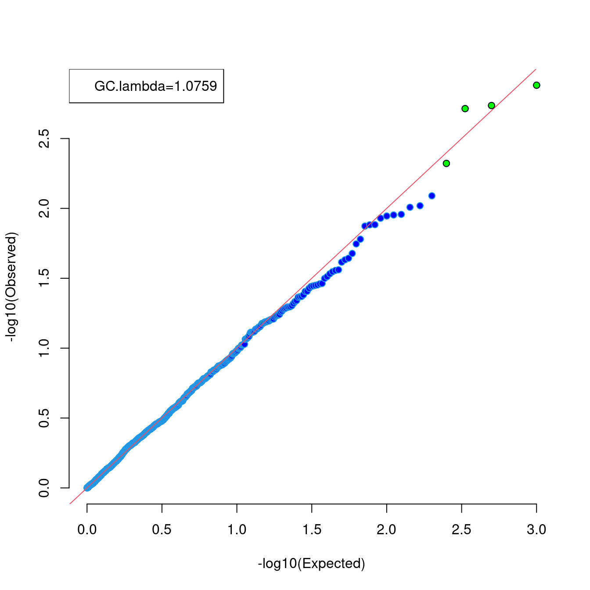
Figure 7.1: A Q-Q plot
Based on a chicken genome scan data, the code below generates a Manhattan plot, demonstrating the use of gaps to separate chromosomes.
w4 <- w4[order(w4$chr, w4$pos), ]
colors <- c(rep(c("blue","red"),15),"red")
suggestiveline <- -log10(3.60036E-05)
genomewideline <- -log10(1.8E-06)
mhtplot(
w4,
control = mht.control(
colors = colors,
gap = 1000,
cex = 0.6,
cutoffs = c(suggestiveline,genomewideline),
lab.cex = 0.6,
xline = 3,
yline = 3
),
pch = 19,
srt = 0
)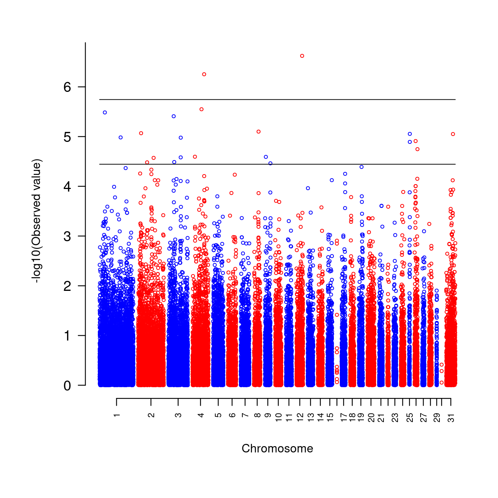
Figure 7.2: A genome-wide association study on chickens
The code below obtains a Manhattan plot with gene annotation15,
data <- with(mhtdata,cbind(chr,pos,p))
glist <- c("IRS1","SPRY2","FTO","GRIK3","SNED1","HTR1A","MARCH3","WISP3",
"PPP1R3B","RP1L1","FDFT1","SLC39A14","GFRA1","MC4R")
hdata <- subset(mhtdata,gene%in%glist)[c("chr","pos","p","gene")]
hcolor <- rep("red",length(glist))
ops <- mht.control(axis.tck=0.02,cex=0.4,lab.cex=0.8,xline=4)
hops <- hmht.control(data=hdata,cex=0.8,colors=hcolor,boxed=TRUE)
mhtplot(data,ops,hops,pch=19)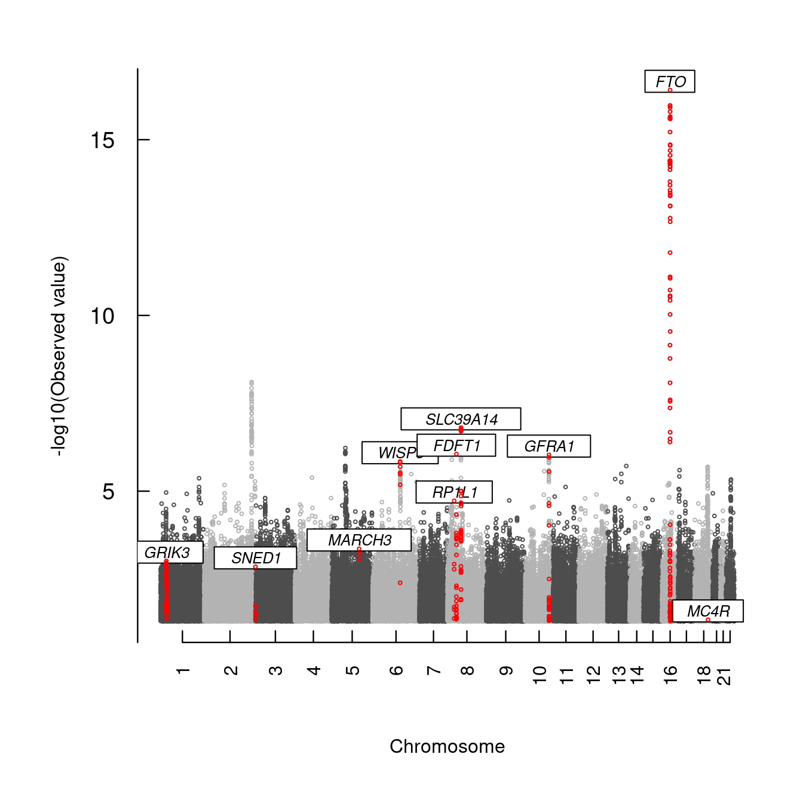
Figure 7.3: A Manhattan plot with gene annotation
All these look familiar, so revised form of the function called mhtplot2 was
created, allowing for more sophisticated coloring schemes, using prespecified fonts, etc. Please refer to
the function’s documentation example.
We could also go further with a circos Manhattan plot,
circos.mhtplot(mhtdata, glist)
#> Note: 11 points are out of plotting region in sector 'chr16', track '3'.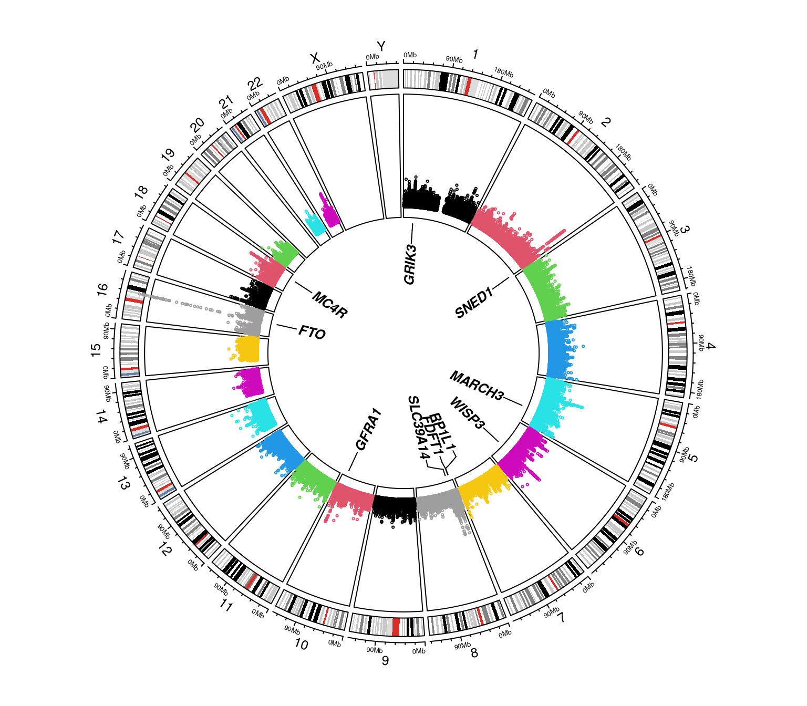
Figure 7.4: A circos Manhattan plot
and a version with y-axis,
require(gap.datasets)
library(dplyr)
#>
#> Attaching package: 'dplyr'
#> The following objects are masked from 'package:stats':
#>
#> filter, lag
#> The following objects are masked from 'package:base':
#>
#> intersect, setdiff, setequal, union
testdat <- mhtdata[c("chr","pos","p","gene","start","end")] %>%
rename(log10p=p) %>%
mutate(chr=paste0("chr",chr),log10p=-log10(log10p))
dat <- mutate(testdat,start=pos,end=pos) %>%
select(chr,start,end,log10p)
labs <- subset(testdat,gene %in% glist) %>%
group_by(gene,chr,start,end) %>%
summarize() %>%
mutate(cols="blue") %>%
select(chr,start,end,gene,cols)
#> `summarise()` has regrouped the output.
#> ℹ Summaries were computed grouped by gene, chr, start, and end.
#> ℹ Output is grouped by gene, chr, and start.
#> ℹ Use `summarise(.groups = "drop_last")` to silence this message.
#> ℹ Use `summarise(.by = c(gene, chr, start, end))` for per-operation grouping (`?dplyr::dplyr_by`) instead.
labs[2,"cols"] <- "red"
ticks <- 0:2*5
circos.mhtplot2(dat,labs,ticks=ticks,ymax=max(ticks))
#> Note: 43 points are out of plotting region in sector 'chr16', track '5'.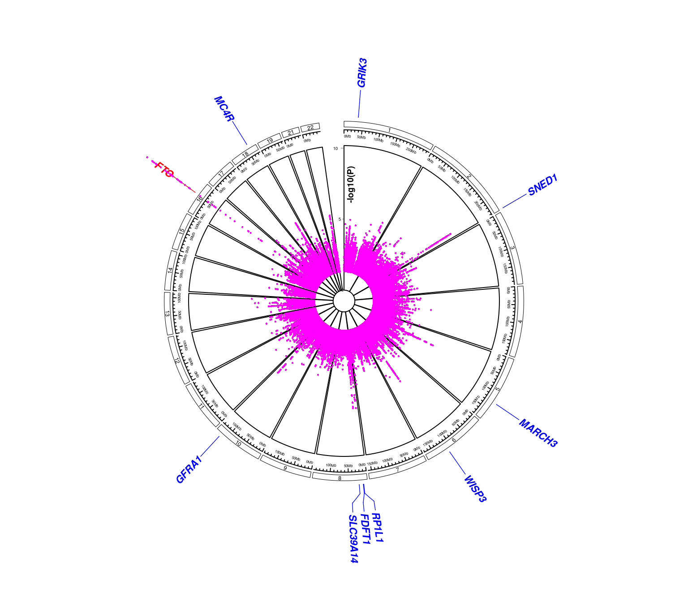
Figure 7.5: Another circos Manhattan plot
As a side note, the data is used by manhattanly.
#{r mhttest, fig.cap="Manhattanly plot", fig.height=8, fig.width=8, plotly=TRUE}
library(manhattanly)
mhttest <- manhattanly(mhtdata, chr = "chr", bp = "pos",
snp = "rsn", annotation1 = "gene", suggestiveline = TRUE,
annotation2 = "rsn", p = "p")
mhttest
htmlwidgets::saveWidget(mhttest,"mhttest.html")We now experiment with Miami plot,
mhtdata <- within(mhtdata,{pr=p})
miamiplot(mhtdata,chr="chr",bp="pos",p="p",pr="pr",snp="rsn")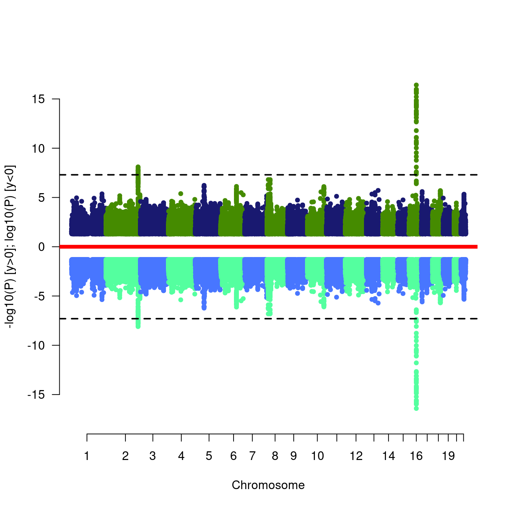
Figure 7.6: Miami plots
# An alternative implementation
gwas <- select(mhtdata,chr,pos,p) %>%
mutate(z=qnorm(p/2))
chrmaxpos <- miamiplot2(gwas,gwas,name1="Batch 2",name2="Batch 1",z1="z",z2="z")
#> Warning in max(c(dat1$pos[dat1$chr == i], dat2$pos[dat2$chr == i]), na.rm = TRUE): no non-missing arguments to max; returning -Inf
labelManhattan(chr=c(2,16),pos=c(226814165,52373776),name=c("AnonymousGene","FTO"),gwas,gwasZLab="z",chrmaxpos=chrmaxpos)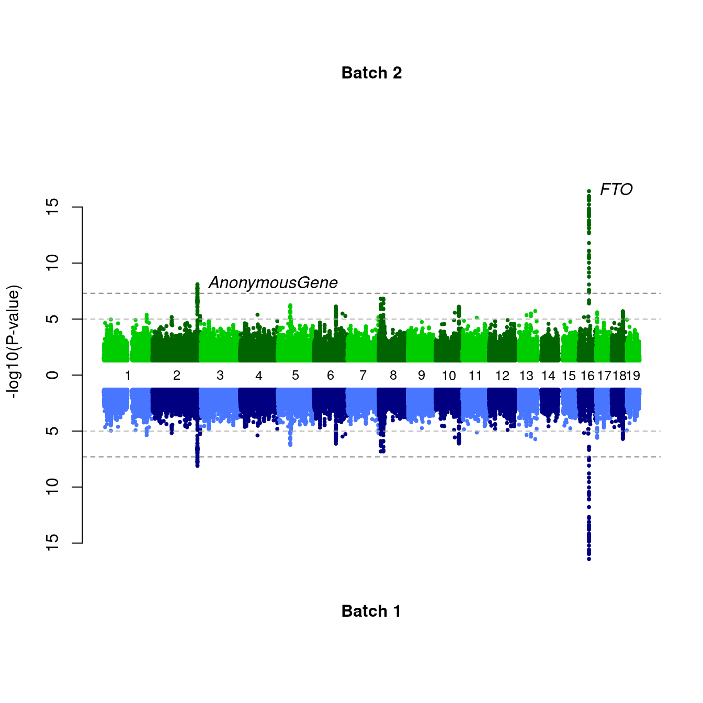
Figure 7.7: Miami plots
and a truncated Manhattan plot, noting that only data points with -log10(P)>=2 are shown,
hl <- c("BHLHE40", "LPP", "IL12B", "MHC", "SH2B3;TRAFD1", "FLT3", "RAD51B", "TRAF3")
dat <- IL.12B_truncated
dat <- dat[order(dat$Chromosome, dat$Position), ]
Cairo::CairoPNG("IL-12B_mhtplot.trunc.png", width = 9, height = 6, units = "in", dpi = 300)
screen_like <- TRUE
cex.scale <- if (screen_like) 0.85 else 1
space.scale <- if (screen_like) 0.85 else 1
par(mar = c(5, 6.5, 1, 1),cex = cex.scale)
d <- mhtplot.trunc(
dat,
chr = "Chromosome",
bp = "Position",
log10p = "log10P",
snp = "MarkerName",
highlight = hl,
suggestiveline = FALSE,
genomewideline = -log10(5e-8),
annotateTop = FALSE,
annotatelog10P = Inf,
y.brk1 = 115,
y.brk2 = 300,
trunc.yaxis = TRUE,
cex.axis = 1.1 * cex.scale,
cex = 0.75 * cex.scale,
cex.text = 0.85 * cex.scale,
y.ax.space = 35 * space.scale,
col = c("blue4", "skyblue")
)
hl.df <- d[d$SNP %in% hl, ]
hl.df <- hl.df[order(hl.df$log10P, decreasing = TRUE), ]
base.space <- 0.9 * space.scale
hl.df$offset <- (seq_len(nrow(hl.df)) - 1) * base.space
if (all(c("FLT3", "TRAF3") %in% hl.df$SNP)) {
i1 <- which(hl.df$SNP == "FLT3")
i2 <- which(hl.df$SNP == "TRAF3")
hl.df$offset[i2] <- hl.df$offset[i1] + 2.2 * base.space
}
text(x = hl.df$pos, y = hl.df$log10P + hl.df$offset,
labels = hl.df$SNP, cex = 0.85 * cex.scale, font = 3, pos = 3)
dev.off()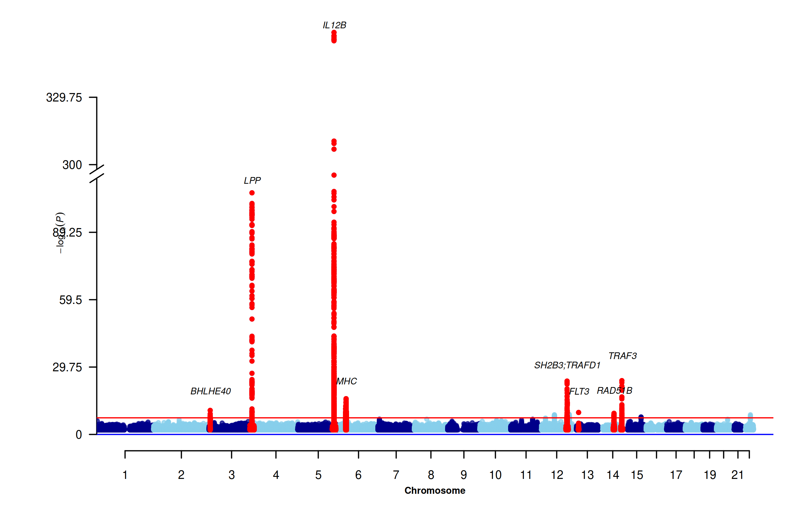
Figure 7.8: Association of IL-12B
The code below obtains a regional association plot with the asplot function,
asplot(CDKNlocus, CDKNmap, CDKNgenes, best.pval=5.4e-8, sf=c(3,6))
#> - CDKN2A
#> - CDKN2B
title("CDKN2A/CDKN2B Region")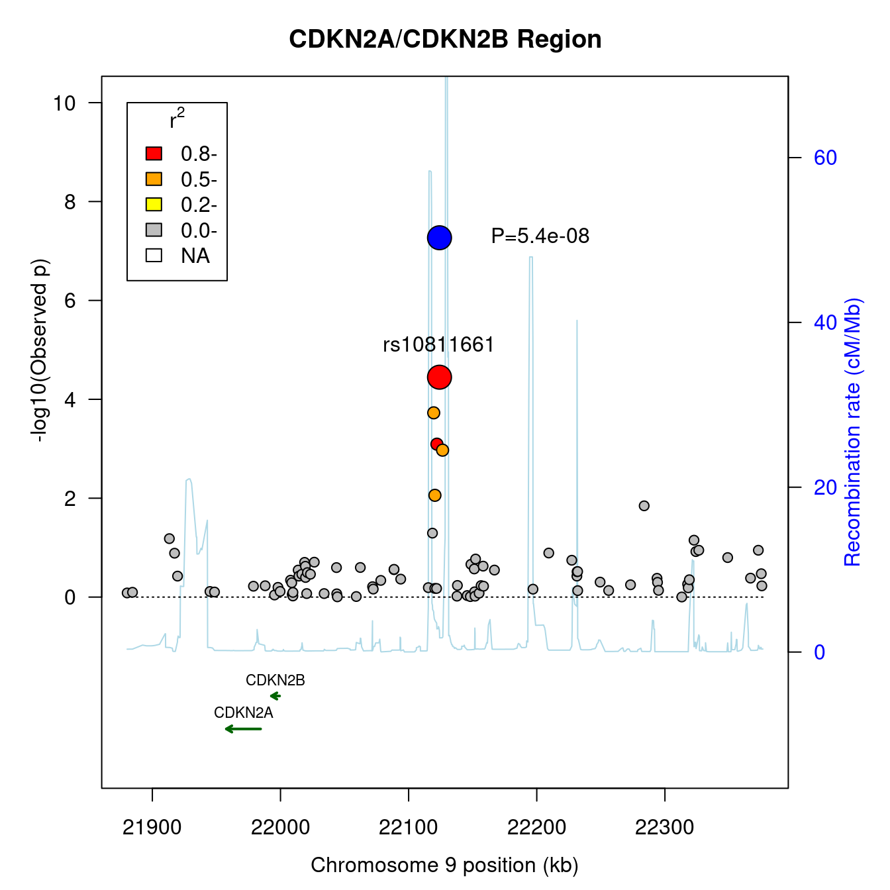
Figure 7.9: A regional association plot
The function predates the currently popular locuszoom software but leaves the option open for generating such plots on the fly and locally.
Note that all these can serve as templates to customize features of your own, such a example is provided here, https://jinghuazhao.github.io/pQTLtools/articles/LocusZoom.js.html#gapasplot.
A plot of copy number variation (CNV) is shown here,
cnvplot(gap.datasets::cnv)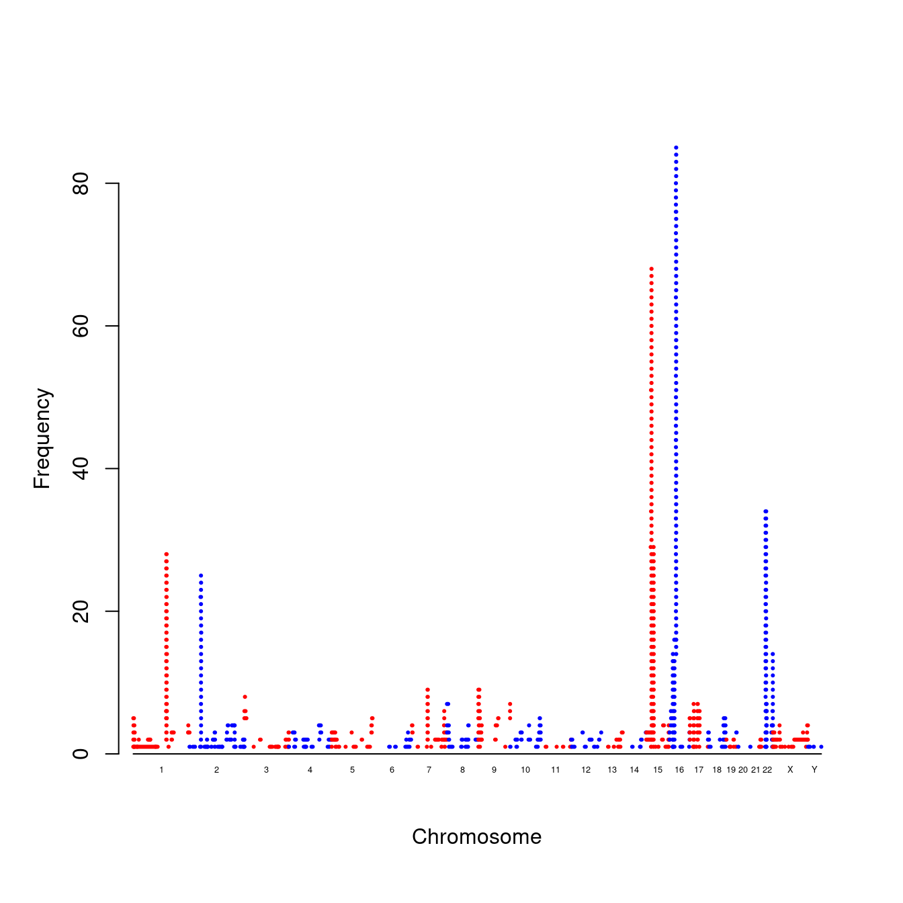
Figure 7.10: A CNV plot
The code below obtains an effect size plot via the ESplot function.
library(gap)
rs12075 <- data.frame(id=c("CCL2","CCL7","CCL8","CCL11","CCL13","CXCL6","Monocytes"),
b=c(0.1694,-0.0899,-0.0973,0.0749,0.189,0.0816,0.0338387),
se=c(0.0113,0.013,0.0116,0.0114,0.0114,0.0115,0.00713386))
ESplot(rs12075)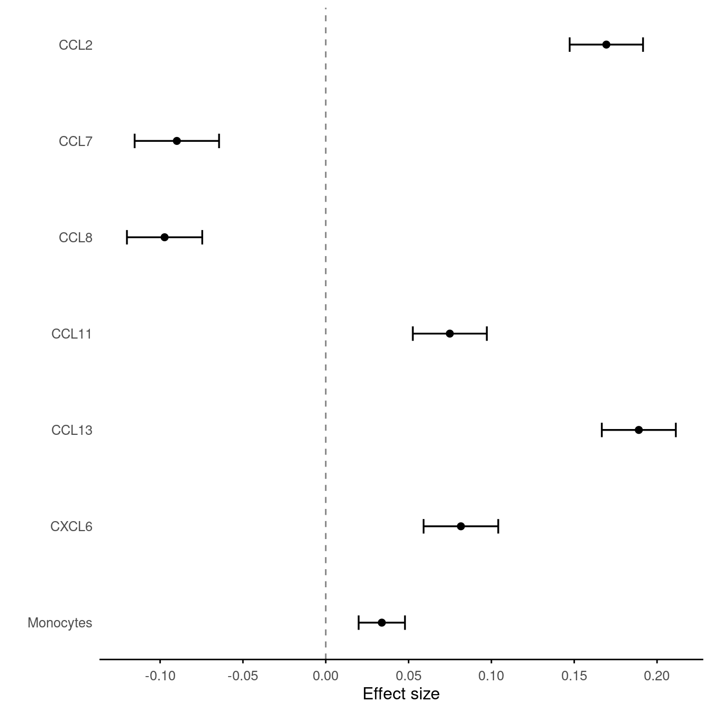
Figure 7.11: rs12075 and traits
It draws many forest plots given a list of variants, e.g.,
data(OPG,package="gap.datasets")
meta::settings.meta(method.tau="DL")
METAL_forestplot(OPGtbl,OPGall,OPGrsid,width=6.75,height=5,digits.TE=2,digits.se=2,
col.diamond="black",col.inside="black",col.square="black")
#> Joining with `by = join_by(MarkerName)`
#> Joining with `by = join_by(MarkerName)`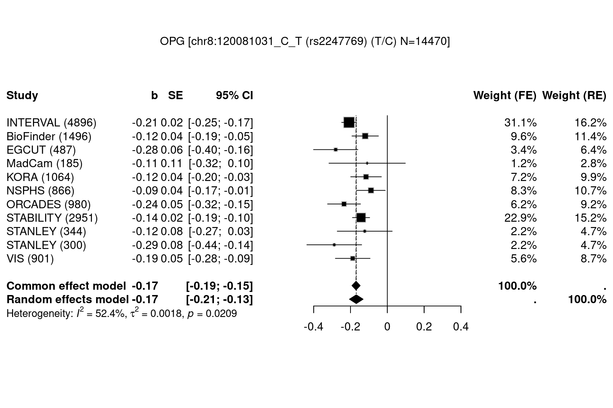
Figure 7.12: Forest plots
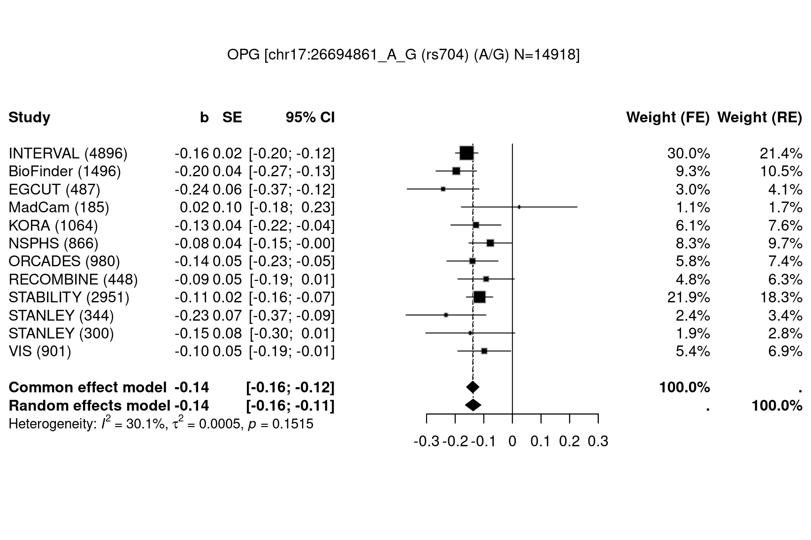
Figure 7.13: Forest plots
METAL_forestplot(OPGtbl,OPGall,OPGrsid,package="metafor",method="FE",xlab="Effect",
showweights=TRUE)
#> Joining with `by = join_by(MarkerName)`
#> Joining with `by = join_by(MarkerName)`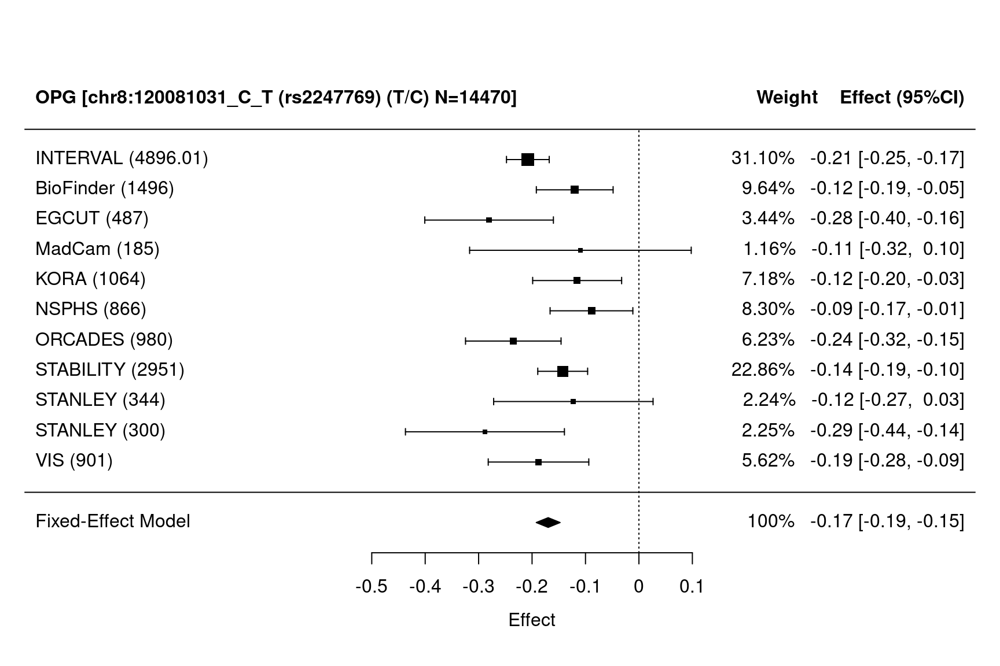
Figure 7.14: Forest plots
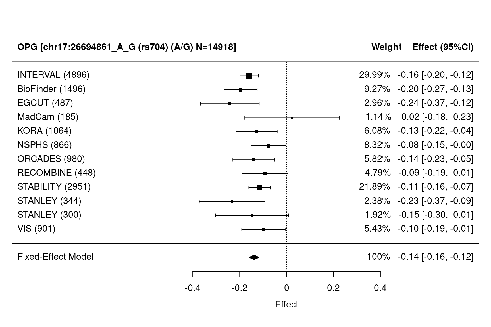
Figure 7.15: Forest plots
Our focus is on z ~ Normal(0,1), whose schematic diagram is shown below.
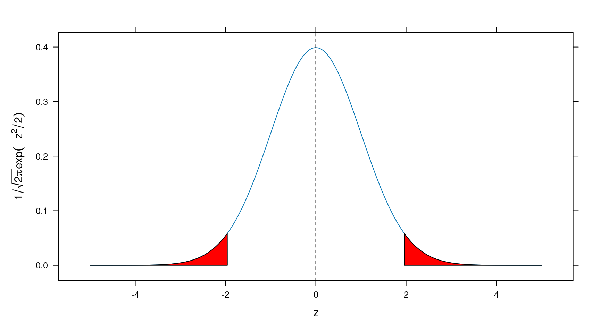
Figure 8.1: Normal(0,1) distribution
The associate R function is z <- function(p) qnorm(p/2,lower.tail=FALSE).
When z is very large, its corresponding p value is very small. A genomewide significance is declared at 0.05/1000000=5e-8 with Bonferroni correction assuming 1 million SNPs are tested. This short note describes how to get -log10(p), which can be used in a Q-Q plot and software such as DEPICT16. The solution here is generic since z is also the square root of a chi-squared statistic, for instance.
First thing first, here are the answers for log(p) and log10(p) given z,
# log(p) for a standard normal deviate z based on log()
logp <- function(z) log(2)+pnorm(-abs(z), lower.tail=TRUE, log.p=TRUE)
# log10(p) for a standard normal deviate z based on log()
log10p <- function(z) log(2, base=10)+pnorm(-abs(z), lower.tail=TRUE, log.p=TRUE)/log(10)Note logp() will be used for functions such as qnorm() as in function cs() whereas log10p() is more appropriate for Manhattan plot and used in sentinels().
We start with z=1.96 whose corresponding p value is approximately 0.05.
2*pnorm(-1.96,lower.tail=TRUE)giving an acceptable value 0.04999579, so we proceed to get log10(p)
log10(2)+log10(pnorm(-abs(z),lower.tail=TRUE))leading to the expression above from the fact that log10(X)=log(X)/log(10) since log(), being the natural log function, ln() – so log(exp(1)) = 1, in R, works far better on the numerator of the second term. The use of -abs() just makes sure we are working on the lower tail of the standard Normal distribution from which our p value is calculated.
Now we have a stress test,
z <- 20000
-log10p(z)giving -log10(p) = 86858901.
We would be curious about the p value itself as well, which is furnished with the Rmpfr package
require(Rmpfr)
2*pnorm(mpfr(-abs(z),100),lower.tail=TRUE,log.p=FALSE)
mpfr(log(2),100) + pnorm(mpfr(-abs(z),100),lower.tail=TRUE,log.p=TRUE)giving p = 1.660579603192917090365313727164e-86858901 and -log(p) = -200000010.1292789076808554854177, respectively. To carry on we have -log10(p) = -log(p)/log(10)=86858901.
To make -log10(p) usable in R we obtain it directly through
as.numeric(-log10(2*pnorm(mpfr(-abs(z),100),lower.tail=TRUE)))which actually yields exactly the same 86858901.
If we go very far to have z=50,000. then -log10(p)=542868107 but we have less luck with Rmpfr.
One may wonder the P value in this case, which is 6.6666145952e-542868108 or simply 6.67e-542868108.
The magic function for doing this is defined as follows,
pvalue <- function (z, decimals = 2)
{
lp <- -log10p(z)
exponent <- ceiling(lp)
base <- 10^-(lp - exponent)
paste0(round(base, decimals), "e", -exponent)
}and it is more appropriate to express p values in scientific format so they can be handled as follows,
log10pvalue <- function(p=NULL,base=NULL,exponent=NULL)
{
if(!is.null(p))
{
p <- format(p,scientific=TRUE)
p2 <- strsplit(p,"e")
base <- as.numeric(lapply(p2,"[",1))
exponent <- as.numeric(lapply(p2,"[",2))
} else if(is.null(base) | is.null(exponent)) stop("base and exponent should both be specified")
log10(base)+exponent
}used as log10pvalue(p) when p<=1e-323, or log10pvalue(base=1,exponent=-323) otherwise.
One can also derive logpvalue for natural base (e) similarly.
We end with a quick look-up table
require(gap)
zlist <- c(5,10,30,40,50,100,500,1000,2000,3000,5000)
zp <- sapply(zlist,function(z) {c(z,pvalue(z),logp(z),log10p(z))})
rownames(zp) <- c("z","P","log(P)","log10(P)")
knitr::kable(t(zp),caption="z, P, log(P) and log10(P)")| z | P | log(P) | log10(P) |
|---|---|---|---|
| 5 | 5.73e-7 | -14.3718512134288 | -6.24161567672667 |
| 10 | 1.52e-23 | -52.5381379699525 | -22.8170234098221 |
| 30 | 9.81e-198 | -453.628096775783 | -197.008179265997 |
| 40 | 7.31e-350 | -803.915294833194 | -349.135976463682 |
| 50 | 2.16e-545 | -1254.13821395886 | -544.665305866333 |
| 100 | 2.69e-2174 | -5004.83106151365 | -2173.57051287337 |
| 500 | 2.47e-54290 | -125006.440403451 | -54289.6072695865 |
| 1000 | 4.58e-217151 | -500007.133547632 | -217150.339011999 |
| 2000 | 4.34e-868593 | -2000007.82669406 | -868592.362896546 |
| 3000 | 1.8e-1954329 | -4500008.23215903 | -1954328.74374587 |
| 5000 | 1.51e-5428685 | -12500008.7429846 | -5428684.82082061 |
mhtplot.trunc() function accepts three types of arguments:In all three cases, a log10(P) counterpart is obtained internally and to accommodate extreme value, the y-axis allows for truncation leaving out a given range to highlight the largest.
See the IL-12B example above.
Several functions related to linear regression are detailed here1 using results on ratio estimator2.
When \(\mbox{Var}(\mbox{y})=1\), as in cis eQTLGen18 data, we have \(b\) and its standard error (se) as follows,
\[ \begin{align} b & = z/d \hspace{100cm} \\ se & = 1/d \tag{9.1} \end{align} \]
where \(d = \sqrt{2f(1-f)(z^2+N)}\).
Now three functions are in place.
A record of the eQTLGen data is shown below
SNP Pvalue SNPChr SNPPos AssessedAllele OtherAllele Zscore
rs1003563 2.308e-06 12 6424577 A G 4.7245
Gene GeneSymbol GeneChr GenePos NrCohorts NrSamples FDR
ENSG00000111321 LTBR 12 6492472 34 23991 0.006278872
BonferroniP hg19_chr hg19_pos AlleleA AlleleB allA_total allAB_total
1 12 6424577 A G 2574 8483
allB_total AlleleB_all
7859 0.6396966from which we obtain the effect size and its standard error as follows,
get_b_se(0.6396966,23991,4.7245)
#> b se
#> [1,] 0.04490488 0.009504684This function obtains proportion of explained variation (PVE) from n, z; its standard error is based on variance of the ratio (correction=TRUE) or \(r^2\).
We continue with the eQTLGen example above,
get_sdy(0.6396966,23991,0.04490488,0.009504684)
#> [1] 1and indeed the eQTLGen data were standardized.
Following an earlier implementation called sentinels, a distance-based signal
identification based on GWAS summary statistics is avaialable from qtlFinder
function; to avoid the overhead of data-loading it works on a preselected list
of variants from a GWAS and in this case a METAL output file.
We considered a region of interest (which could be approximately independent variants, e.g., \(r^2 \le 0.5\)) using expressions that rely on effect sizes and their standard errors19. More specifically, let Bayes factor (BF) for each variant in the meta-analysis be defined as \(ln(BF) \propto 0.5 \beta^2/SE^2\), where \(\beta\) and \(SE\) are the effect size and standard error from the meta-analysis, respectively. The posterior probability (PP) for being causal for a particular variant is obtained as \(BF_i/\sum_{i=1}^TBF_i\), where \(i=1,\ldots,T\) indexes all variants considered in the region. We generated credible sets within a given region by ranking all variants by PPs in descending order and calculating the number of variants required to reach a cumulative probability of such as 99%.
The function cs obtains credible set.
# zcat METAL/4E.BP1-1.tbl.gz | \
# awk 'NR==1 || ($1==4 && $2 >= 187158034 - 1e6 && $2 < 187158034 + 1e6)' > 4E.BP1.z
tbl <- within(read.delim("4E.BP1.z"),{logp <- logp(Effect/StdErr)})
z <- cs(tbl)
l <- cs(tbl,log_p="logp")Note in particular that the implementation intends to avoid the naive summation in scenarios such as proteogenomic analysis containing exceptionally large BFs.
In line with the recent surge of interest in the polygenic models, a separate vignette
is available through vignette("h2",package="gap.examples") demonstrating aspect of
the models on heritability. Utility Functions h2G, h2GE and h2l are briefly
documented. Functions h2.jags and hwe.jags are also available. The function
h2_mzdz can be used for heritability estimation based on monozygotic (MZ) and
dizygotic (DZ) twin correlations under the additive genetics, common and specific
environment (ACE) model, e.g., 10.1038/s41562-023-01530-y.
Two functions are notable, i.e., ab and masize. See their documentation for examples.
The function mr was originally developed to rework on data generated from GSMR20, although it could be any harmonised data. The following example is from analysis of a real data on LIF-R protein and CVD/FEV1.
| SNP | b.LIF.R | SE.LIF.R | b.FEV1 | SE.FEV1 | b.CAD | SE.CAD |
|---|---|---|---|---|---|---|
| rs188743906 | 0.6804 | 0.1104 | 0.00177 | 0.01660 | NA | NA |
| rs2289779 | -0.0788 | 0.0134 | 0.00104 | 0.00261 | -0.007543 | 0.0092258 |
| rs117804300 | -0.2281 | 0.0390 | -0.00392 | 0.00855 | 0.109372 | 0.0362219 |
| rs7033492 | -0.0968 | 0.0147 | -0.00585 | 0.00269 | 0.022793 | 0.0119903 |
| rs10793962 | 0.2098 | 0.0212 | 0.00378 | 0.00536 | -0.014567 | 0.0138196 |
| rs635634 | -0.2885 | 0.0153 | -0.02040 | 0.00334 | 0.077157 | 0.0117123 |
| rs176690 | -0.0973 | 0.0142 | 0.00293 | 0.00306 | -0.000007 | 0.0107781 |
| rs147278971 | -0.2336 | 0.0378 | -0.01240 | 0.00792 | 0.079873 | 0.0397491 |
| rs11562629 | 0.1155 | 0.0181 | 0.00960 | 0.00378 | -0.010040 | 0.0151460 |
The MR analysis is as follows,
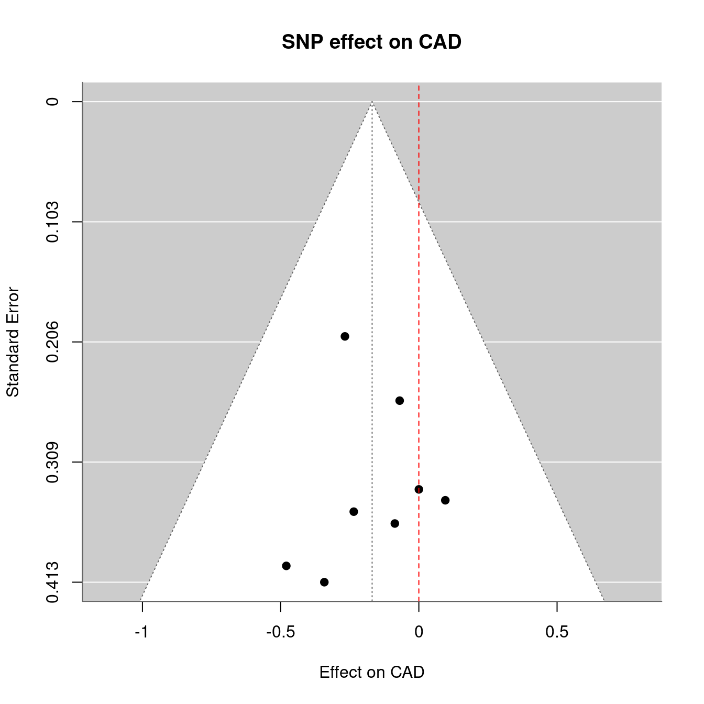
Figure 12.1: Mendelian randomization
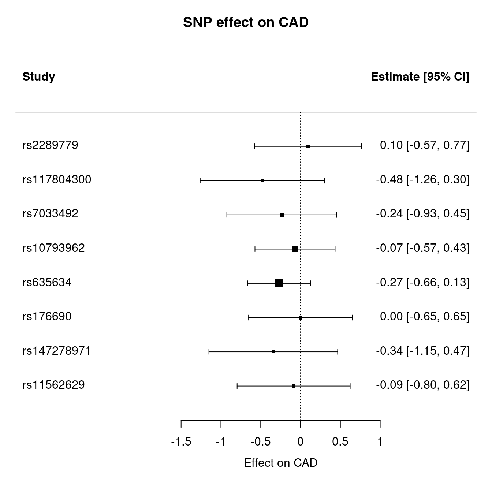
Figure 12.2: Mendelian randomization
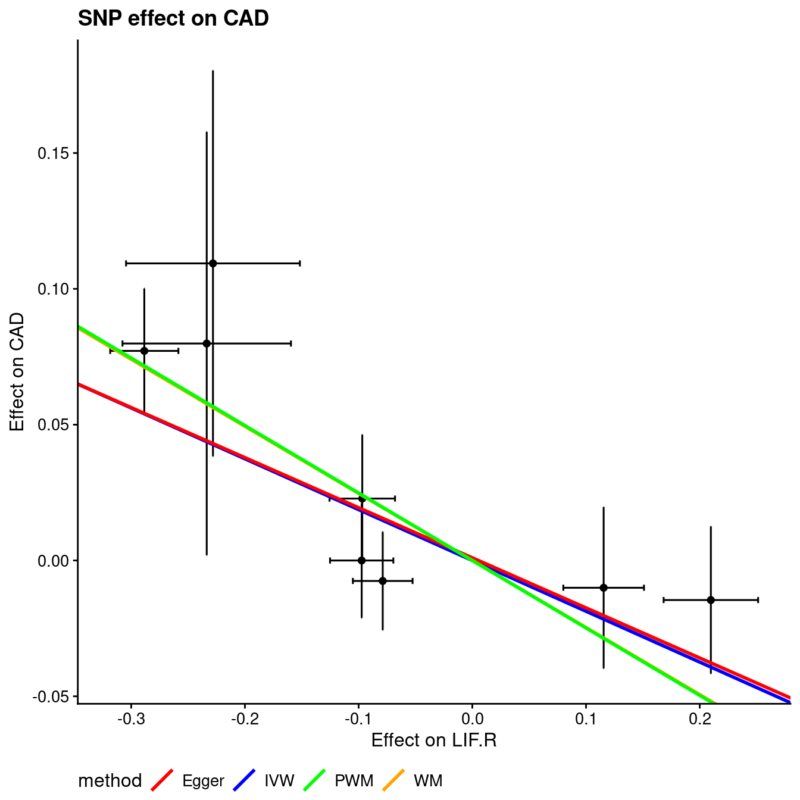
Figure 12.3: Mendelian randomization
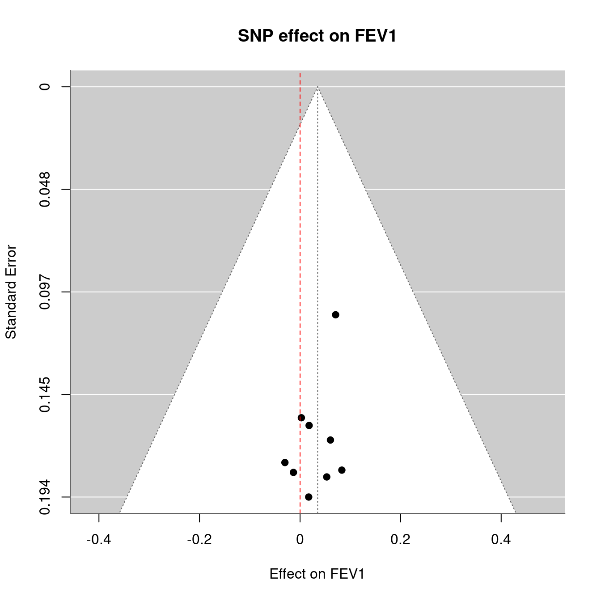
Figure 12.4: Mendelian randomization
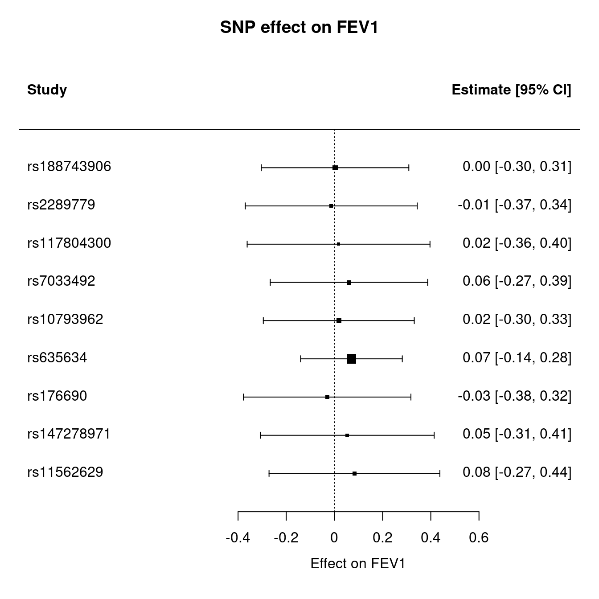
Figure 12.5: Mendelian randomization
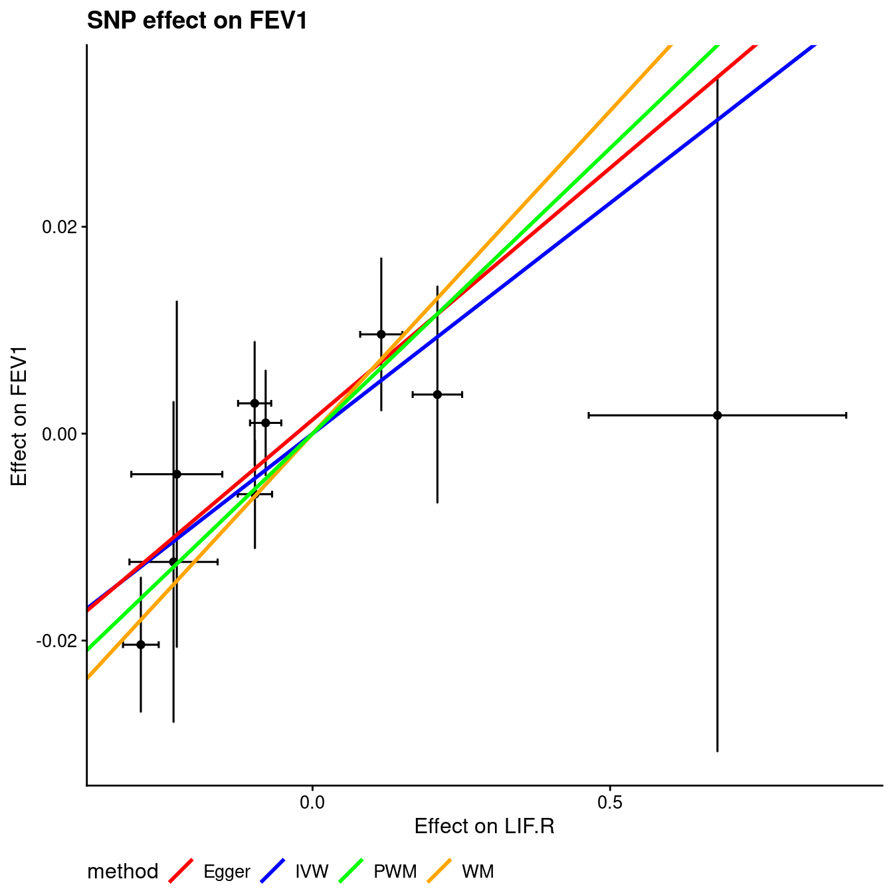
Figure 12.6: Mendelian randomization
| bIVW | -0.187 | 0.045 |
| sebIVW | 0.050 | 0.012 |
| CochQ | 2.116 | 0.482 |
| CochQp | 0.953 | 1.000 |
| bEGGER | -0.184 | 0.049 |
| sebEGGER | 0.060 | 0.015 |
| intEGGER | 0.001 | 0.001 |
| seintEGGER | 0.010 | 0.002 |
| bWM | -0.247 | 0.062 |
| sebWM | 0.048 | 0.012 |
| bPWM | -0.248 | 0.055 |
| sebPWM | 0.042 | 0.013 |
| pIVW | 1.786342e-04 | 3.187050e-04 |
| pEGGER | 2.151003e-03 | 1.125669e-03 |
| pWM | 2.573232e-07 | 7.084748e-08 |
| pPWM | 4.132171e-09 | 2.980983e-05 |
This is close to Ligthart et al.21 as used one time at workplace which turns to overlap with TwoSampleMR22.
It would be of interest to contrast their effect sizes in the analysis above as well,
mr_names <- names(mrdat)
LIF.R <- cbind(mrdat[grepl("SNP|LIF.R",mr_names)],trait="LIF.R"); names(LIF.R) <- c("SNP","b","se","trait")
FEV1 <- cbind(mrdat[grepl("SNP|FEV1",mr_names)],trait="FEV1"); names(FEV1) <- c("SNP","b","se","trait")
CAD <- cbind(mrdat[grepl("SNP|CAD",mr_names)],trait="CAD"); names(CAD) <- c("SNP","b","se","trait")
mrdat2 <- within(rbind(LIF.R,FEV1,CAD),{y=b})
library(ggplot2)
p <- ggplot2::ggplot(mrdat2,aes(y = SNP, x = y))+
ggplot2::theme_bw()+
ggplot2::geom_point()+
ggplot2::facet_wrap(~ trait, ncol=3, scales="free_x")+
ggplot2::geom_segment(aes(x = b-1.96*se, xend = b+1.96*se, yend = SNP))+
ggplot2::geom_vline(lty=2, ggplot2::aes(xintercept=0), colour = 'red')+
ggplot2::xlab("Effect size")+
ggplot2::ylab("")
p
#> Warning: Removed 1 row containing missing values or values outside the scale range (`geom_point()`).
#> Warning: Removed 1 row containing missing values or values outside the scale range (`geom_segment()`).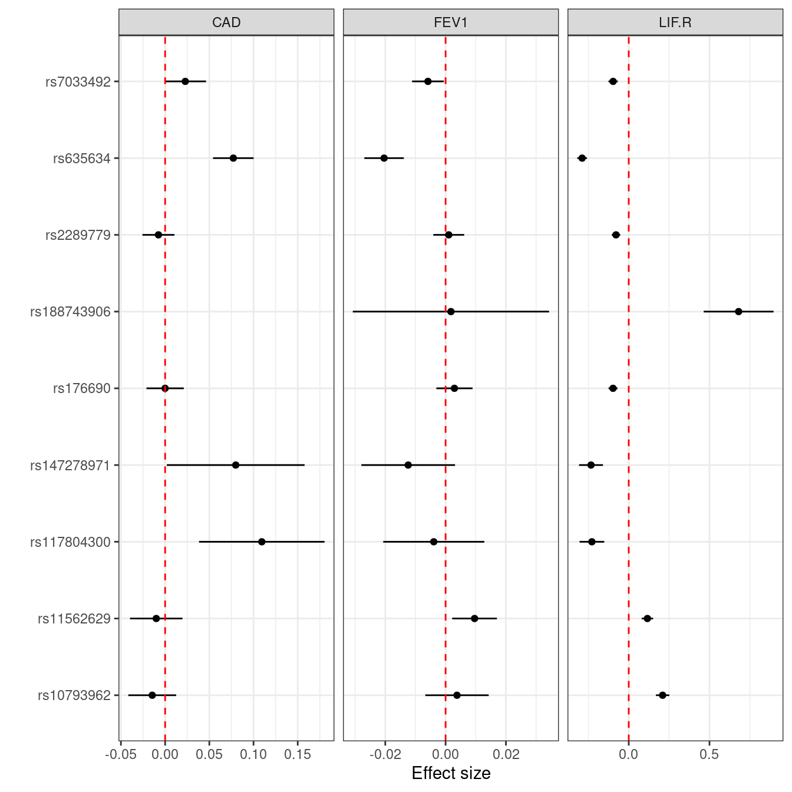
Figure 12.7: Combined forest plots for LIF.R, FEV1 and CAD
We illustrate with mr_forestplot(),
mr_forestplot(tnfb, fontsize=12,
leftcols=c("studlab","effect","seTE","ci"), leftlabs=c("Outcome","b","SE","95% CI"),
rightcols=c("w.common","w.random"),rightlabs=c("Weight (FE)","Weight (RE)"),
common=FALSE, random=FALSE, print.I2=FALSE, print.pval.Q=FALSE, print.tau2=FALSE,
spacing=1.6, digits.TE=2, digits.seTE=2, xlab="Effect size", type.study="square", col.inside="black", col.square="black")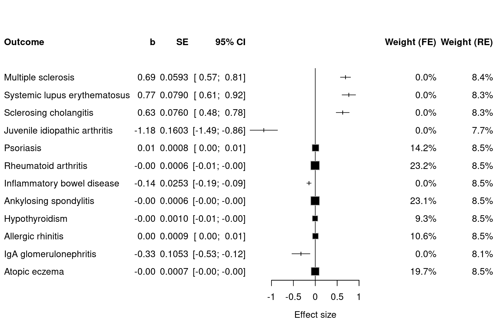
Figure 12.8: Forest plots for MR results on TNFB
mr_forestplot(tnfb, colgap.forest.left="0.05cm", fontsize=14,
leftcols="studlab", leftlabs="Outcome", plotwidth="3inch", sm="OR", rightlabs="ci",
sortvar=tnfb[["Effect"]],
common=FALSE, random=FALSE, print.I2=FALSE, print.pval.Q=FALSE, print.tau2=FALSE,
backtransf=TRUE, spacing=1.6,type.study="square",col.inside="black",col.square="black")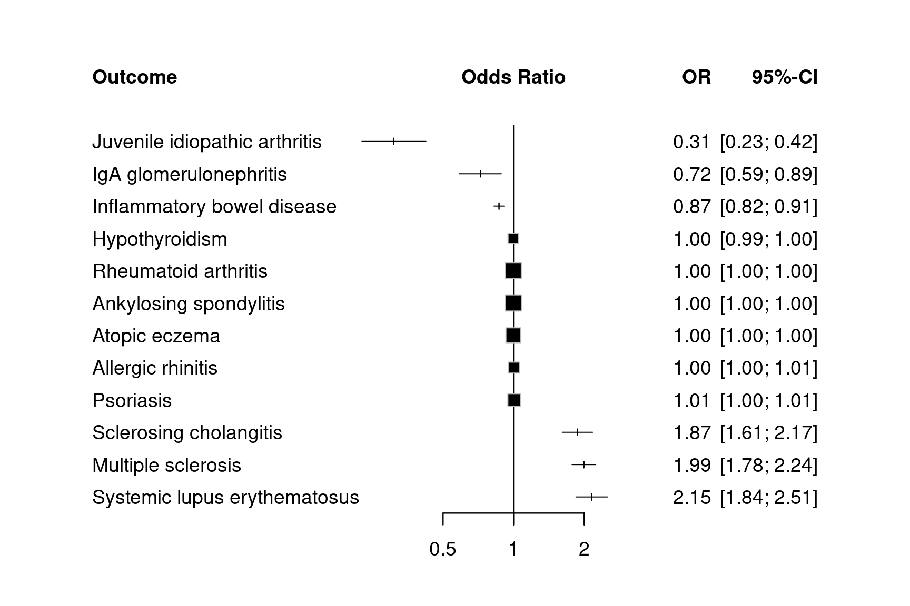
Figure 12.9: Forest plots for MR results on TNFB (no summary statistics)
mr_forestplot(tnfb,colgap.forest.left="0.05cm", fontsize=14,
leftcols=c("studlab"), leftlabs=c("Outcome"),
plotwidth="3inch", sm="OR", sortvar=tnfb[["Effect"]],
rightcols=c("effect","ci","pval"), rightlabs=c("OR","95%CI","P"),
digits=3, digits.pval=2, scientific.pval=TRUE,
common=FALSE, random=FALSE, print.I2=FALSE, print.pval.Q=FALSE, print.tau2=FALSE,
addrow=TRUE, backtransf=TRUE, spacing=1.6,type.study="square",col.inside="black",col.square="black")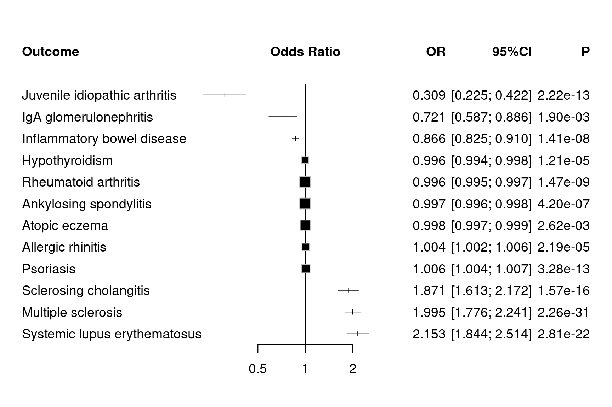
Figure 12.10: Forest plots for MR results on TNFB (with P values)
They are functions to handle SNPid.
require(gap)
s <- chr_pos_a1_a2(1,c(123,321),letters[1:2],letters[2:1])
s
#> [1] "chr1:123_A_B" "chr1:321_A_B"
inv_chr_pos_a1_a2(s)
#> chr pos a1 a2
#> chr1:123_A_B chr1 123 A B
#> chr1:321_A_B chr1 321 A B
inv_chr_pos_a1_a2("chr1:123-A_B",seps=c(":","-","_"))
#> chr pos a1 a2
#> chr1:123-A_B chr1 123 A BHere is the documentation example on rs3784099 and breast cancer23.
example(ci2ms)
#>
#> ci2ms> # rs3784099 and breast cancer recurrence/mortality
#> ci2ms> ms <- ci2ms("1.28-1.72")
#>
#> ci2ms> print(ms)
#> $m
#> [1] 0.3945922
#>
#> $s
#> [1] 0.07537491
#>
#> $direction
#> [1] "+"
#>
#>
#> ci2ms> # Vector input
#> ci2ms> ci2 <- c("1.28-1.72","1.25-1.64")
#>
#> ci2ms> ms2 <- ci2ms(ci2)
#>
#> ci2ms> print(ms2)
#> $m
#> [1] 0.3945922 0.3589199
#>
#> $s
#> [1] 0.07537491 0.06927492
#>
#> $direction
#> [1] "+" "+"The definition is as follows,
gc.lambda <- function(x, logscale=FALSE, z=FALSE) {
v <- x[!is.na(x)]
n <- length(v)
if (z) {
obs <- v^2
exp <- qchisq(log(1:n/n),1,lower.tail=FALSE,log.p=TRUE)
} else {
if (!logscale)
{
obs <- qchisq(v,1,lower.tail=FALSE)
exp <- qchisq(1:n/n,1,lower.tail=FALSE)
} else {
obs <- qchisq(-log(10)*v,1,lower.tail=FALSE,log.p=TRUE)
exp <- qchisq(log(1:n/n),1,lower.tail=FALSE,log.p=TRUE)
}
}
lambda <- median(obs)/median(exp)
return(lambda)
}
# A simplified version is as follows,
# obs <- median(chisq)
# exp <- qchisq(0.5, 1) # 0.4549364
# lambda <- obs/exp
# see also estlambda from GenABEL and qq.chisq from snpStats
# A related function
lambda1000 <- function(lambda, ncases, ncontrols)
1 + (lambda - 1) * (1 / ncases + 1 / ncontrols)/( 1 / 1000 + 1 / 1000)The function is widely used in various consortium analyses and defined as follows,
invnormal <- function(x) qnorm((rank(x,na.last="keep")-0.5)/sum(!is.na(x)))An example use on data from Poisson distribution is as follows,
set.seed(12345)
Ni <- rpois(50, lambda = 4); table(factor(Ni, 0:max(Ni)))
#>
#> 0 1 2 3 4 5 6 7 8 9
#> 2 4 6 11 8 10 4 2 2 1
y <- invnormal(Ni)
sd(y)
#> [1] 0.9755074
mean(y)
#> [1] 0.002650512
Ni <- 1:50
y <- invnormal(Ni)
mean(y)
#> [1] -1.810184e-17
sd(y)
#> [1] 0.9973999This functions obtains allele(s) on the opposite strand.
alleles <- c("a","c","G","t")
revStrand(alleles)
#> [1] "t" "g" "C" "a"This is a function to output sample file for SNPTEST.
d <- data.frame(ID_1=1,ID_2=1,missing=0,PC1=1,PC2=2,D1=1,P1=10)
snptest_sample(d,C=paste0("PC",1:2),D=paste0("D",1:1),P=paste0("P",1:1))The commands above generates a file named snptest.sample.
A lot of code optimization as wtih better memory management is desirable. There are apparent issues with the Shiny interfaces for power/sample size calculation which produce less outputs for certain configurations than expected.
By now the package should have given you a flavor of the project. It sets to build a infrastructure to keep up with the development of R system itself and collect elements from oning work. Over years it also serves to inspire others to join force and develop better alternatives.
After package loading via library(gap), you can use lsf.str("package:gap") and
data(package="gap") to generate a list of functions and a list
of datasets, respectvely. If this looks odd to you, you might try
search() within R to examine what is available in your
environment before issuing the lsf.str command.
#> [1] ".GlobalEnv" "package:ggplot2" "package:lattice" "package:dplyr" "package:kinship2" "package:quadprog"
#> [7] "package:Matrix" "package:DiagrammeR" "package:gap" "package:gap.datasets" "package:stats" "package:graphics"
#> [13] "package:grDevices" "package:utils" "package:datasets" "package:methods" "Autoloads" "package:base"
#> a2g : function (a1, a2)
#> ACDE : function (model, data, type = c("AE", "ACE", "ADE"), method = "ML")
#> ACE_CI : function (mzData, dzData, selV, n.boot = 1000, conf.level = 0.95, use = "complete.obs", bounds = FALSE, seed = NULL, verbose = interactive())
#> AE3 : function (model, random, data, seed = 1234, n.sim = 50000, verbose = TRUE)
#> allele.recode : function (a1, a2, miss.val = NA)
#> asplot : function (locus, map, genes, flanking = 1000, best.pval = NULL, sf = c(4, 4), logpmax = 10, pch = 21)
#> b2r : function (b, s, rho, n)
#> BFDP : function (a, b, pi1, W, logscale = FALSE)
#> bt : function (x)
#> ccsize : function (n, q, pD, p1, theta, alpha, beta = 0.2, power = TRUE, verbose = FALSE)
#> chow.test : function (y1, x1, y2, x2, x = NULL)
#> chr_pos_a1_a2 : function (chr, pos, a1, a2, prefix = "chr", seps = c(":", "_", "_"), uppercase = TRUE)
#> ci2ms : function (ci, logscale = TRUE, alpha = 0.05)
#> circos.cis.vs.trans.plot : function (f, panel, id, radius = 1e+06)
#> circos.cnvplot : function (data)
#> circos.mhtplot : function (data, glist)
#> circos.mhtplot2 : function (dat, labs, species = "hg18", ticks = 0:3 * 10, ymax = 30)
#> cis.vs.trans.classification : function (hits, panel, id = "uniprot", radius = 1e+06, verbose = TRUE)
#> cnvplot : function (data)
#> comp.score : function (ibddata = "ibd_dist.out", phenotype = "pheno.dat", mean = 0, var = 1, h2 = 0.3)
#> cs : function (tbl, b = "Effect", se = "StdErr", log_p = NULL, cutoff = 0.95)
#> ESplot : function (ESdat, alpha = 0.05, fontsize = 12, transform = c("none", "exp"), xlab = NULL)
#> fbsize : function (gamma, p, alpha = c(1e-04, 1e-08, 1e-08), beta = 0.2, debug = 0, error = 0)
#> FPRP : function (a, b, pi0, ORlist, logscale = FALSE)
#> g2a : function (g)
#> gc.em : function (data, locus.label = NA, converge.eps = 1e-06, maxiter = 500, handle.miss = 0, miss.val = 0, control = gc.control())
#> gc.lambda : function (x, logscale = FALSE, z = FALSE)
#> gcontrol : function (data, zeta = 1000, kappa = 4, tau2 = 1, epsilon = 0.01, ngib = 500, burn = 50, idum = 2348)
#> gcontrol2 : function (p, col = palette()[4], lcol = palette()[2], ...)
#> gcp : function (y, cc, g, handle.miss = 1, miss.val = 0, n.sim = 0, locus.label = NULL, quietly = FALSE)
#> genecounting : function (data, weight = NULL, loci = NULL, control = gc.control())
#> geno.recode : function (geno, miss.val = 0)
#> get_b_se : function (f, n, z)
#> get_pve_se : function (n, z, correction = TRUE)
#> get_sdy : function (f, n, b, se, method = "mean", ...)
#> gif : function (data, gifset)
#> grid2d : function (chrlen, plot = TRUE, cex.labels = 0.6, xlab = "QTL position", ylab = "Gene position")
#> h2G : function (V, VCOV, verbose = TRUE)
#> h2GE : function (V, VCOV, verbose = TRUE)
#> h2.jags : function (y, x, G, eps = 1e-04, sigma.p = 0, sigma.r = 1, parms = c("b", "p", "r", "h2"), ...)
#> h2l : function (K = 0.05, P = 0.5, h2, se, verbose = TRUE)
#> h2_mzdz : function (mzDat = NULL, dzDat = NULL, rmz = NULL, rdz = NULL, nmz = NULL, ndz = NULL, selV = NULL, use = "complete.obs", ci = TRUE, bounds = FALSE,
#> digits = 3)
#> hap : function (id, data, nloci, loci = rep(2, nloci), names = paste("loci", 1:nloci, sep = ""), control = hap.control())
#> hap.control : function (mb = 0, pr = 0, po = 0.001, to = 0.001, th = 1, maxit = 100, n = 0, ss = 0, rs = 0, rp = 0, ro = 0, rv = 0, sd = 0, mm = 0, mi = 0,
#> mc = 50, ds = 0.1, de = 0, q = 0, hapfile = "hap.out", assignfile = "assign.out")
#> hap.em : function (id, data, locus.label = NA, converge.eps = 1e-06, maxiter = 500, miss.val = 0)
#> hap.score : function (y, geno, trait.type = "gaussian", offset = NA, x.adj = NA, skip.haplo = 0.005, locus.label = NA, miss.val = 0, n.sim = 0, method = "gc",
#> id = NA, handle.miss = 0, mloci = NA, sexid = NA)
#> hmht.control : function (data = NULL, colors = "red", yoffset = 0.25, cex = 1.2, boxed = FALSE)
#> hwe : function (data, type = c("alleles", "genotypes", "counts"), verbose = TRUE, yates.correct = FALSE, B = 1e+05, seed = 123)
#> hwe.cc : function (model, case, ctrl, k0, initial1, initial2)
#> hwe.hardy : function (a, alleles = 3, seed = 3000, sample = c(1000, 1000, 5000))
#> hwe.jags : function (k, n, delta = rep(1/k, k), lambda = 0, lambdamu = -1, lambdasd = 1, parms = c("p", "f", "q", "theta", "lambda"), ...)
#> inv_chr_pos_a1_a2 : function (chr_pos_a1_a2, prefix = "chr", seps = c(":", "_", "_"))
#> invnormal : function (x)
#> ixy : function (x)
#> KCC : function (model, GRR, p1, K)
#> kin.morgan : function (ped, verbose = FALSE)
#> klem : function (obs, k = 2, l = 2)
#> labelManhattan : function (chr, pos, name, gwas, gwasChrLab = "chr", gwasPosLab = "pos", gwasPLab = "p", gwasZLab = "NULL", chrmaxpos, textPos = 4, angle = 0,
#> miamiBottom = FALSE)
#> LD22 : function (h, n)
#> LDkl : function (n1 = 2, n2 = 2, h, n, optrho = 2, verbose = FALSE)
#> log10p : function (z)
#> log10pvalue : function (p = NULL, base = NULL, exponent = NULL)
#> logp : function (z)
#> makeped : function (pifile = "pedfile.pre", pofile = "pedfile.ped", auto.select = 1, with.loop = 0, loop.file = NA, auto.proband = 1, proband.file = NA)
#> makeRLEplot : function (E, log2.data = TRUE, groups = NULL, col.group = NULL, showTitle = FALSE, title = "Relative log expression (RLE) plot", ...)
#> masize : function (model, opts, alpha = 0.025, gamma = 0.2)
#> MCMCgrm : function (model, prior, data, GRM, eps = 0, n.thin = 10, n.burnin = 3000, n.iter = 13000, ...)
#> METAL_forestplot : function (tbl, all, rsid, flag = "", package = "meta", method = "REML", split = FALSE, ...)
#> metap : function (data, N, sided = c("two", "one"), verbose = TRUE, prefixp = "p", prefixn = "n", prefixbeta = NULL, prefixdir = NULL)
#> metareg : function (data, N, verbose = FALSE, prefixb = "b", prefixse = "se")
#> mht.control : function (type = "p", usepos = FALSE, logscale = TRUE, base = 10, cutoffs = NULL, colors = NULL, labels = NULL, gap = NULL, cex = 0.4, lab.cex = 1,
#> axis.cex = 1.2, axis.lwd = 1.2, axis.tck = -0.02, yline = 3, xline = 3, verbose = FALSE)
#> mhtplot : function (data, control = mht.control(), hcontrol = hmht.control(), ...)
#> mhtplot2 : function (data, control = mht.control(), hcontrol = hmht.control(), ...)
#> mhtplot.trunc : function (x, chr = "CHR", bp = "BP", p = NULL, log10p = NULL, z = NULL, snp = "SNP", col = c("gray10", "gray60"), chrlabs = NULL, suggestiveline = -log10(1e-05),
#> genomewideline = -log10(5e-08), highlight = NULL, annotatelog10P = NULL, annotateTop = FALSE, cex.mtext = 1.5, cex.text = 0.7, mtext.line = 2,
#> y.ax.space = 5, y.brk1 = NULL, y.brk2 = NULL, trunc.yaxis = TRUE, cex.axis = 1.2, delta = 0.05, ...)
#> mia : function (hapfile = "hap.out", assfile = "assign.out", miafile = "mia.out", so = 0, ns = 0, mi = 0, allsnps = 0, sas = 0)
#> miamiplot : function (x, chr = "CHR", bp = "BP", p = "P", pr = "PR", snp = "SNP", col = c("midnightblue", "chartreuse4"), col2 = c("royalblue1", "seagreen1"),
#> ymax = NULL, highlight = NULL, highlight.add = NULL, pch = 19, cex = 0.75, cex.lab = 1, xlab = "Chromosome", ylab = "-log10(P) [y>0]; log10(P) [y<0]",
#> lcols = c("red", "black"), lwds = c(5, 2), ltys = c(1, 2), main = "", ...)
#> miamiplot2 : function (gwas1, gwas2, name1 = "GWAS 1", name2 = "GWAS 2", chr1 = "chr", chr2 = "chr", pos1 = "pos", pos2 = "pos", p1 = "p", p2 = "p", z1 = NULL,
#> z2 = NULL, sug = 1e-05, sig = 5e-08, pcutoff = 0.1, topcols = c("green3", "darkgreen"), botcols = c("royalblue1", "navy"), yAxisInterval = 5)
#> mr : function (data, X, Y, alpha = 0.05, other_plots = FALSE)
#> mr_forestplot : function (dat, sm = "", title = "", ...)
#> mtdt : function (x, n.sim = 0)
#> mtdt2 : function (x, verbose = TRUE, n.sim = NULL, ...)
#> muvar : function (n.loci = 1, y1 = c(0, 1, 1), y12 = c(1, 1, 1, 1, 1, 0, 0, 0, 0), p1 = 0.99, p2 = 0.9)
#> mvmeta : function (b, V)
#> pbsize : function (kp, gamma = 4.5, p = 0.15, alpha = 5e-08, beta = 0.2)
#> pbsize2 : function (N, fc = 0.5, alpha = 0.05, gamma = 4.5, p = 0.15, kp = 0.1, model = "additive")
#> pedtodot : function (pedfile, makeped = FALSE, sink = TRUE, page = "B5", url = "https://jinghuazhao.github.io/", height = 0.5, width = 0.75, rotate = 0,
#> dir = "none")
#> pedtodot_verbatim : function (f)
#> pfc : function (famdata, enum = 0)
#> pfc.sim : function (famdata, n.sim = 1e+06, n.loop = 1)
#> pgc : function (data, handle.miss = 1, is.genotype = 0, with.id = 0)
#> pvalue : function (z, decimals = 2)
#> qqfun : function (x, distribution = "norm", ylab = deparse(substitute(x)), xlab = paste(distribution, "quantiles"), main = NULL, las = par("las"), envelope = 0.95,
#> labels = FALSE, col = palette()[4], lcol = palette()[2], xlim = NULL, ylim = NULL, lwd = 1, pch = 1, bg = palette()[4], cex = 0.4, line = c("quartiles",
#> "robust", "none"), ...)
#> qqunif : function (u, type = "unif", logscale = TRUE, base = 10, col = palette()[4], lcol = palette()[2], ci = FALSE, alpha = 0.05, ...)
#> qtl2dplot : function (d, chrlen = gap::hg19, snp_name = "SNP", snp_chr = "Chr", snp_pos = "bp", gene_chr = "p.chr", gene_start = "p.start", gene_end = "p.end",
#> trait = "p.target.short", gene = "p.gene", TSS = FALSE, cis = "cis", value = "log10p", plot = TRUE, cex.labels = 0.6, cex.points = 0.6, xlab = "QTL position",
#> ylab = "Gene position")
#> qtl2dplotly : function (d, chrlen = gap::hg19, qtl.id = "SNPid:", qtl.prefix = "QTL:", qtl.gene = "Gene:", target.type = "Protein", TSS = FALSE, xlab = "QTL position",
#> ylab = "Gene position", ...)
#> qtl3dplotly : function (d, chrlen = gap::hg19, zmax = 300, qtl.id = "SNPid:", qtl.prefix = "QTL:", qtl.gene = "Gene:", target.type = "Protein", TSS = FALSE,
#> xlab = "QTL position", ylab = "Gene position", ...)
#> qtlClassifier : function (geneSNP, SNPPos, genePos, radius)
#> qtlFinder : function (d, Chromosome = "Chromosome", Position = "Position", MarkerName = "MarkerName", Allele1 = "Allele1", Allele2 = "Allele2", EAF = "Freq1",
#> Effect = "Effect", StdErr = "StdErr", log10P = "log10P", N = "N", radius = 1e+06, collapse.hla = TRUE, build = "hg19")
#> ReadGRM : function (prefix = 51)
#> ReadGRMBin : function (prefix, AllN = FALSE, size = 4)
#> read.ms.output : function (msout, is.file = TRUE, xpose = TRUE, verbose = TRUE, outfile = NULL, outfileonly = FALSE)
#> revStrand : function (allele)
#> runshinygap : function (...)
#> s2k : function (y1, y2)
#> sentinels : function (p, pid, st, debug = FALSE, flanking = 1e+06, chr = "Chrom", pos = "End", b = "Effect", se = "StdErr", log_p = NULL, snp = "MarkerName",
#> sep = ",")
#> snptest_sample : function (data, sample_file = "snptest.sample", ID_1 = "ID_1", ID_2 = "ID_2", missing = "missing", C = NULL, D = NULL, P = NULL)
#> tscc : function (model, GRR, p1, n1, n2, M, alpha.genome, pi.samples, pi.markers, K)
#> whscore : function (allele, type)
#> WriteGRM : function (prefix = 51, id, N, GRM)
#> WriteGRMBin : function (prefix, grm, N, id, size = 4)
#> xy : function (x)
#> Package LibPath Item Title
#> [1,] "gap" "/rds/project/rds-4o5vpvAowP0/software/R" "hg18" "Chromosomal lengths for build 36"
#> [2,] "gap" "/rds/project/rds-4o5vpvAowP0/software/R" "hg19" "Chromosomal lengths for build 37"
#> [3,] "gap" "/rds/project/rds-4o5vpvAowP0/software/R" "hg38" "Chromosomal lengths for build 38"Let \(\mbox{x} = SNP\ dosage\). Note that \(\mbox{Var}(\mbox{x})=2f(1-f)\), \(f=MAF\) or \(1-MAF\) by symmetry.
Our linear regression model is \(\mbox{y}=a + b\mbox{x} + e\). We have \(\mbox{Var}(\mbox{y}) = b^2\mbox{Var}(\mbox{x}) + \mbox{Var}(e)\). Moreover, \(\mbox{Var}(b)=\mbox{Var}(e)(\mbox{x}'\mbox{x})^{-1}=\mbox{Var}(e)/S_\mbox{xx}\), we have \(\mbox{Var}(e) = \mbox{Var}(b)S_\mbox{xx} = N \mbox{Var}(b) \mbox{Var}(\mbox{x})\). Consequently, let \(z = {b}/{SE(b)}\), we have
\[\begin{eqnarray*} \mbox{Var}(\mbox{y}) &=& \mbox{Var}(\mbox{x})(b^2+N\mbox{Var}(b)) \hspace{100cm} \cr &=& \mbox{Var}(\mbox{x})\mbox{Var}(\mbox{b})(z^2+N) \cr &=& 2f(1-f)(z^2+N)\mbox{Var}(b) \end{eqnarray*}\]
Moreover, the mean and the variance of the multiple correlation coefficient or the coefficient of determination (\(R^2\)) are known17 to be \({1}/{(N-1)}\) and \({2(N-2)}/{\left[(N-1)^2(N+1)\right]}\), respectively.
We also need some established results of a ratio (R/S)[^2], i.e., the mean
\[ \begin{align} E(R/S) \approx \frac{\mu_R}{\mu_S}-\frac{\mbox{Cov}(R,S)}{\mu_S^2}+\frac{\sigma_S^2\mu_R}{\mu_S^3} \hspace{100cm} \tag{15.1} \end{align} \]
and more importantly the variance
\[ \begin{align} \mbox{Var}(R/S) \approx \frac{\mu_R^2}{\mu_S^2} \left[ \frac{\sigma_R^2}{\mu_R^2} -2\frac{\mbox{Cov}(R,S)}{\mu_R\;\mu_S} +\frac{\sigma_S^2}{\mu_S^2} \right] \hspace{100cm} \tag{15.2} \end{align} \]
where \(\mu_R\), \(\mu_S\), \(\sigma_R^2\), \(\sigma_S^2\) are the means and the variances for R and S, respectively.
Finally, we need some facts about \(\chi_1^2\), \(\chi^2\) distribution of one degree of freedom. For \(z \sim N(0,1)\), \(z^2\sim \chi_1^2\), whose mean and variance are 1 and 2, respectively.
We now have the following results.
We have
\[ \begin{align} \mbox{PVE}_{\mbox{linear regression}} & = \frac{\mbox{Var}(b\mbox{x})}{\mbox{Var}(\mbox{y})} \hspace{100cm} \\ & = \frac{\mbox{Var}(\mbox{x})b^2}{\mbox{Var}(\mbox{x})(b^2+N\mbox{Var}(b))} \\ & = \frac{\mbox{z}^2}{\mbox{z}^2+N} \tag{15.3} \end{align} \]
On the other hand, for a simple linear regression \(R^2\equiv r^2\) where \(r\) is the Pearson correlation coefficient, which is readily from the \(t\)-statistic of the regression slope, i.e., \(r={t}/{\sqrt{t^2+N-2}}\). so assuming \(t \equiv \ z \sim \chi_1^2\)
\[ \begin{align} \mbox{PVE}_{t-\mbox{statistic}} & = \frac{\chi^2}{\chi^2+N-2} \hspace{100cm} \tag{15.4} \end{align} \]
To obtain coherent estimates of the asymptotic means and variances of both forms we resort to variance of a ratio (R/S). All the required elements are listed in a table below.
| Characteristics | Linear regression | \(t\)-statistic |
|---|---|---|
| \(\mu_R\) | 1 | 1 |
| \(\sigma_R^2\) | 2 | 2 |
| \(\mu_S\) | \(N+1\) | \(N-1\) |
| \(\sigma_S^2\) | 2 | 2 |
| \(\mbox{Cov}(R,S)\) | 2 | 2 |
then we have the means and the variances for PVE.
| Characteristics | Linear regression | \(t\)-statistic |
|---|---|---|
| mean | \(\frac{1}{N+1}\left[1-\frac{2}{N+1}+\frac{2}{(N+1)^2}\right]\) | \(\frac{1}{N-1}\left[1-\frac{2}{N-1}+\frac{2}{(N-1)^2}\right]\) |
| variance | \(\frac{2}{(N+1)^2}\left[1-\frac{1}{N+1}\right]^2\) | \(\frac{2}{(N-1)^2}\left[1-\frac{1}{N-1}\right]^2\) |
Finally, our approximation of PVE for a protein with \(T\) independent pQTLs from the meta-analysis
| Characteristics | Linear regression | \(t\)-statistic |
|---|---|---|
| estimate | \(\sum_{i=1}^T{\frac{\chi_i^2}{\chi_i^2+N_i}}\) | \(\sum_{i=1}^T{\frac{\chi_i^2}{\chi_i^2+N_i-2}}\) |
| variance | \(\sum_{i=1}^T\frac{2}{(N_i+1)^2}\) | \(\sum_{i=1}^T\frac{2}{(N_i-1)^2}\) |
Therefore they differ from the asymptotic results17 by ratios of \((N-2)(N+1)/(N-1)^2\) and \((N-2)/(N+1)\) for linear regression and \(t\)-statistic, respectively.
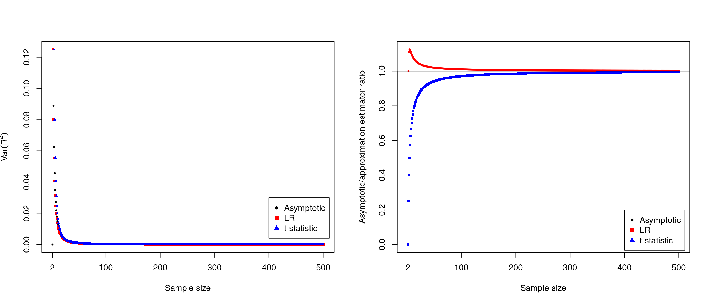
Figure 15.1: Comparisons of Var(\(R^2\)) estimates
As the sample size increases, the estimates are quite close nevertheless quite small while the ratios approach 1 quickly from opposite sides after \(N\approx 300\).↩︎
Notes by Howard Seltman from Carnegie Mellon University: Pittsburgh, PA, USA.↩︎